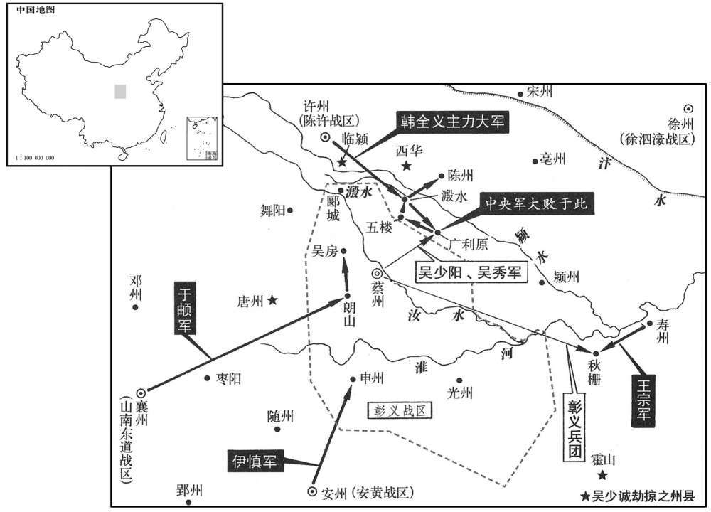

卷次与人物目录 / 卷235
资治通鉴 · 卷第二百三十五【唐纪五十一】
公元794年至公元800年 · 原文、白话与胡三省注
本页按胡注本编排保存全卷内容。白话采用本站所据译本，未可靠对应的内容另列说明；事件标题用于定位，并非原书文字。
本卷共130段原文，128段有译文对应，2段缺译或待核对。
卷第二百三十五【唐纪五十一】起阏逢淹茂（甲戌）六月，尽上章执徐（庚辰），凡六年有奇。
卷首原文与注释
德宗神武圣文皇帝十
公元794年 · 唐德宗神武圣文皇帝贞元十年
贞元十年〔（甲戌、七九四）〕
上传原文的注释括号有异常，字符原样保留；无法可靠划分的段落默认全文显示。
本年记事分属相邻卷，按原书顺序分别保留：第234卷 · 第235卷。
本年事件索引（现代整理）
六月，壬寅朔，昭义节度使李抱真薨。其子殿中侍御史缄与抱真从甥元仲经谋，秘不发丧，诈为抱真表，求以职事授缄；又诈为其父书，遣裨将陈荣诣王武俊假货财。武俊怒曰：「吾与乃公厚善，欲同奖王室耳，岂与汝同恶邪！闻乃公已亡，〔乃，犹汝也。公，犹翁也。〕乃敢不俟朝命而自立，〔朝，直遥翻。〕又敢告我，况有求也！」使荣归，寄声质责缄。〔质，正也。〕以正义责之也。
六月，壬寅朔（初一），昭义节度使李抱真去世。他的儿子殿中侍御史李缄，与李抱真的表外甥元仲经谋划，先不将李抱真去世的消息公告于众，伪造李抱真的表章，请求将节度使的职务授给李缄，还伪造他父亲的书信，派遣副将陈荣前往王武俊处借用钱财。王武俊生气地说：“我与你父亲深深交好，是为了共同辅助朝廷而已，怎么会与你狼狈为奸呢！听说你父亲已经去世，你竟敢不等待朝廷的任命便擅自继位，还敢告诉我，况且有求于我！”他让陈荣回去，口头传达他对李缄的质问与责备。
昭义步军都虞候王延贵，汝州梁人也，〔梁县，汉、晋属河南郡，后魏置汝北郡，隋分置承休县，而梁县仍故。唐以承休县带汝州，故梁县在其西南四十五里。〕素以义勇闻。上知抱真已薨，遣中使第五守进往观变，且以军事委王延贵。守进至上党，〔昭义军，治上党。〕缄称抱真有疾不能见。三日，缄乃严兵诣守进，守进谓之曰：「朝廷已知相公捐馆，〔捐，弃也。言死者弃其馆舍而逝也。〕令王延贵权知军事。侍御宜发丧行服。」缄愕然，出，谓诸将曰：「朝廷不许缄掌事，诸君意如何﹖」莫对。缄惧，乃归发丧，以使印及管钥授监军。〔使印，节度之印也。监，古衔翻。〕守进召延贵，宣口诏令视事，〔口宣所受诏旨，故曰口诏。〕趣缄赴东都。〔趣赴东都，归私第。趣，读曰促。〕元仲经出走，延贵悉归罪于仲经，捕斩之。诏以延贵权知昭义军事。
昭义步军都虞候王延贵，是汝州梁地人氏，平素以见义勇为知名。德宗知道李抱真已经去世了，便派遣中使第五守进前去观察形势的变化，将要把军中事务交付给王延贵。第五守进来到上党时，李缄声称李抱真重病在身，不能接见。过了三天，李缄才全副武装地去见第五守进，第五守进告诉他说：“朝廷已经知道李相公去世了，已命令王延贵暂且代理军中事务。你最好还是将消息公之于众，为你父亲服丧守孝吧。”李缄惊讶不已，出来以后，他对各将领说：“朝廷不允许我执掌军中事务，诸位意下如何？”没有人回答他。李缄害怕了，便回去将李抱真的死讯公布于众，把节度使的印信和钥匙交给监军。第五守进召来王延贵，口头宣布诏旨，命令王延贵任职，催促李缄前往东都洛阳。元仲经外出逃走。王延贵把罪责全部加给元仲经，便逮捕并斩杀了他。德宗颁诏任命王延贵暂且代理昭义军中事务。
云南王异牟寻遣其弟凑罗楝〔楝，郎甸翻。〕献地图、土贡及吐蕃所给金印，请复号南诏。〔夷语以王为诏。其先渠帅有六，自号六诏，曰蒙巂诏，越析诏，浪穹诏，邆睒诏，施浪诏，蒙舍诏。蒙舍诏在诸部南，故称南诏。至蒙归义，玄宗封为云南王，因号云南。〕癸丑，以祠部郎中袁滋为册南诏使，〔考异曰：旧南诏传：「十年八月，遣凑罗楝献吐蕃印。」新传曰：「异牟寻与崔佐时盟点苍山，败突厥于神川。明年六月，册异牟寻为南诏王。」按实录，乃今年六月，新、旧传皆误也。韦皋奏状皆称「云南王」，而窦滂云南别录曰：「诏袁滋册异牟寻为南诏。」盖从其请，南诏之名自此始也。蛮语，诏即王也。新传云「南诏王」，亦误。余按异牟寻破吐蕃于神川，考异误作「突厥」。〕赐银窠金印，文曰「贞元册南诏印」。滋至其国，异牟寻北面跪受册印，稽首再拜，因与使者宴，出玄宗所赐银平脱马头盘二以示滋。又指老笛工、歌女曰：「皇帝所赐龟兹乐，〔唐十部乐有龟兹乐，有弹筝、竖箜篌、琵琶、五弦、横笛、笙、箫、觱篥、答腊鼓、毛员鼓、都昙鼓、侯提鼓、鸡娄鼓、腰鼓、担鼓、齐鼓，具皆一，铜钹二，舞者四人。设五方师子，高丈余，饰以方色，每师子有十二人，画衣，执红拂，首加红抹，谓之师子郎。龟兹，音丘慈。〕惟二人在耳。」滋曰：「南诏当深思祖考，子子孙孙尽忠于唐。」异牟寻拜曰：「敢不谨承使者之命！」
云南王异牟寻派遣他的弟弟凑罗楝献上地图、土产贡物和吐蕃授给的金印，请求恢复南诏的国号。癸丑（十二日），德宗任命祠部郎中袁滋为册南诏使，赐给以银作底的金印，印文称作“贞元册南诏印”。袁滋来到云南国，异牟寻面向北方跪着接受了册封的印信，叩头至地，拜了两拜，接着便设宴招待使者，拿出玄宗赐给的两个银平脱马头盘，给袁滋看，还指着年迈的吹笛者和歌女说：“皇帝赐给《龟兹乐》时带来的乐工，只有这两个人还活着。”袁滋说：“南诏应当深深仰慕祖先的事迹，了子孙孙对唐朝竭尽忠心。”异牟寻行着礼说：“我怎敢不恭谨地承受使者的教导！”
赐义武节度使张升云名茂昭。〔考异曰：旧传于其父孝忠卒时言改名。年代记在此年九月。今从实录。〕
德宗赐给义武节度使张升云新的名字，叫张茂昭。
御史中丞穆赞按度支吏赃罪，〔度，徒洛翻。〕裴延龄欲出之，〔庇吏，欲出其罪。〕赞不从；延龄谮之，贬饶州别驾，朝士畏延龄侧目。〔畏之不敢正视。〕赞，宁之子也。〔天宝末，安禄山反，穆宁起兵于河北以讨之。
两版字句有差异，建议核对原文。
御史中丞穆赞按察度支部门的官吏贪脏的罪行，裴延龄打算为他们开脱，穆赞不肯听从。于是，裴延龄诬陷他，使他被贬为饶州别驾，朝中百官对裴延龄畏惧得不敢正眼相看。穆赞是穆宁的儿子。
韦皋奏破吐蕃于峨和城。〔武德元年，以汉蚕陵县地置翼州，管内有峨和城。〕
韦皋奏报在峨和城打败吐蕃。
秋，七月，壬申朔，以王延贵为昭义留后，赐名虔休。
秋季，七月，壬申朔（初一），德宗任命王延贵为昭义留后，赐给他新的名字，叫王虔休。
昭义行军司马、摄洺州刺史元谊闻虔休为留后，意不平，表请以磁、邢、洺别为一镇。昭义精兵多在山东，〔昭义军镇潞州，谓磁、邢、洛三州为山东。〕谊厚赉以悦之。上屡遣中使谕之，不从。
昭义行军司马、摄州刺史元谊听说王虔休担任了留后，心中愤慨不满，上表请求将磁州、邢州、州另外组成一个节镇。昭义的精锐兵马多数驻扎在这三州，元谊给与丰厚的待遇，以便取悦他们。德宗屡次派遣中使晓示他，但他不肯听从。
临洺守将夏侯仲宣以城归虔休，虔休遣州刺史马正卿督裨将石定蕃等将兵五千击洺州；定蕃帅其众二千叛归谊，〔帅，读曰率。〕正卿退还。诏以谊为饶州刺史，谊不行；虔休自将兵攻之，引洺水以灌城。
临的守城将领夏侯仲宣率领全城归顺了王虔休，王虔休派遣磁州刺史马正卿督促副将石定蕃等人领兵五千人进击州。石定蕃率领他的部众二千人叛变投降元谊，马正卿撤退而还。德宗颁诏任命元谊为饶州刺史，元谊不肯前去就任。王虔休亲自领兵攻打元谊，还引来水淹灌州城。
黄少卿陷钦、潢、浔、贵等州，攻孙公器于邕州。
黄少卿攻陷了钦、横、浔、贵等州，在邕州进攻孙公器。
九月，王虔休破元谊兵，进拔鸡泽。〔鸡泽，汉广平县地，武德四年置鸡泽县，属洺州。九域志：在州东北六十里。
本段缺少可靠对应白话，原文完整保留；未使用生成译文。
裴延龄奏称官吏太多，自今缺员请且勿补，收其俸以实府库。上欲修神龙寺，须五十尺松，不可得，延龄曰：「臣近见同州一谷，木数千株，皆可八十尺。」上曰：「开元、天宝间求美材于近畿犹不可得，今安得有之﹖」对曰：「天生珍材，固待圣君乃出，开元、天宝，何从得之！」
裴延龄上奏声称官吏太多，从今以后，对于官吏中出现的缺员，请暂且不要补充，收取这部分薪俸，用来充实国家的库存。德宗打算修建神龙寺，需要五十尺长的松木，但无法找到，裴延龄说：“近来我在同州看到一处山谷，谷内有好几千棵树木，都是高八十尺的。”德宗说：“开元、天宝年间在京城周围寻找上好的木材尚且无法找到，现在怎么会有这么多的木材？”裴延龄回答说：“上天生出珍贵的木材，当然是等待圣明的君主出世时才会出现，开元、天宝期间，怎么能够得到这些呢！”
延龄奏：「左藏库司多有失落，近因检阅使置簿书，乃于粪土之中得银十三万两，其匹段杂货百万有余。〔匹段杂货，使在粪土之中，已应腐烂不可用，虽甚愚之人亦知其妄诞也。德宗不加之罪，延龄复何所忌惮乎！〕此皆已弃之物，即是羡余，〔羡弋线翻。〕悉应移入杂库以供别敕支用。」太府少卿韦少华不伏，抗表称：「此皆每月申奏见在之物，〔见，贤遍翻。〕请加推验。」执政諘令三司详覆；上不许，亦不罪少华。延龄每奏对，恣为诡诵，皆众所不敢言亦未尝闻者，延龄处之不疑。〔处，昌吕翻。〕上亦颇知其诞妄，但以其好诋毁人，〔好，呼到翻。〕冀闻外事，故亲厚之。〔德宗亲厚裴延龄，不持冀闻外事也，亦以进奉逢其欲耳。
裴延龄上奏说：“左藏库执掌的物品损失遗落很多，近来由于检阅使去放帐簿，于是在垃圾中得到银子十三万两，成匹成段的布帛和零杂货物超过一百万。这都是已经丢弃的物品，也就成为额外的收入，应当全部搬到杂库去，好供给陛下另外颁敕支取使用。”太府少卿韦少华不承认这一说法，便上表直言声称：“这都是每月申报上奏的现存物品，请加以推究验查。”主持政务的长官请求命令三司详细审察，德宗没有答应，但也不责怪韦少华。每当裴延龄当面回答德宗提出的问题时，任意去说怪诞的事情，都是大家所不敢说、也不曾听说过的，裴延龄却将这些事情说得无可怀疑。德宗也知道裴延龄是荒诞虚妄的，但由于他喜欢恶意诬蔑别人，希望从他那里听到外间的事情，所以亲近厚待他。
群臣畏延龄有宠，莫敢言，惟盐铁转运使张滂、京兆尹李充、司农卿李铦〔铦，息廉翻。〕以职事相关，时证其妄，而陆贽独以身当之，日陈其不可用。十一月，壬申，贽上书极陈延龄奸诈，数其罪恶，〔数，所具翻。〕其略曰：「延龄以聚敛为长策，〔敛，力赡翻。〕以诡妄为嘉谋，以掊克敛怨为匪躬，〔掊，蒲侯翻。〕以靖谮服谗为尽节，〔左传：少皞氏有不才子，毁信废忠，崇饰恶言，服谗搜慝，以诬盛德，天下之民谓之穷奇。〕总典籍之所恶以为智术，冒圣哲之所戒以为行能，〔恶，乌路翻。行，下孟翻。〕可谓尧代之共工，〔书尧典：帝曰：「畴咨若予采！」驩兜曰：「共工方鸠僝功。」帝曰：「吁！靖言庸违，象恭滔天。」共，音恭。〕鲁邦之少卯也。〔家语：孔子为鲁司寇，摄行相事，七日而诛少正卯，戮之于两观之下。子页进曰：「夫少正卯，鲁之闻人也，夫子为政而始诛之，或者为失乎﹖」孔子曰：「天下有大恶者五，而窃盗不豫焉。一曰心逆而险，二曰行伪而坚，三曰言伪而辩，四曰记丑而博，五曰顺非而泽。此五者，有一于人，则不免君子之诛，而少正卯皆兼有之。其居处足以撮徒成党，其谈说足以饬褒荣众，其强御足以返是独立；此乃人之奸雄，有不可以不除。」〕迹其奸蠹，日长月滋，〔长，知丈翻。〕阴秘者固未尽彰，败露者尤难悉数。」又曰：「陛下若意其负谤，则诚宜亟为辩明。〔为，于伪翻。〕陛下若知其无良，又安可曲加容掩！」又曰：「陛下下姑欲保持，曾无诘问，延龄谓能蔽惑，不复惧思；移东就西，便为课绩，取此适彼，遂号羡余，愚弄朝廷，有同儿戏。」又曰：「矫诡之能，诬罔之辞，遇事辄行，应口便发，靡日不有，靡时不为，又难以备陈也。」又曰：「昔赵高指鹿为马，〔事见八卷秦二世三年。〕臣谓鹿之与马，物理犹同；岂若延龄掩有为无，指无为有。」又曰：「延龄凶妄，流布寰区，上自公卿近臣，下逮舆台贱品，〔左传：芊尹无宇曰：王臣公，公臣大夫，大夫臣士，士臣皁，皁臣舆，舆臣隶，隶臣僚，僚臣仆，仆臣台。〕諠諠谈议，亿万为徒，能以上言，〔上，时掌翻。〕其人有几！臣以卑鄙，任当台衡，情激于衷，虽欲罢而不能自默也。」书奏，
群臣畏惧裴延龄得到宠爱，没有人敢于发言，只有盐铁转运使张滂、京兆尹李充、司农卿李，由于职分以内的事务与裴延龄有关联，所以时常证实他的虚妄，而陆贽独自以自身抵挡裴延龄，经常陈说他不可任用。十一月，壬申（初三），陆贽上书极力陈诉裴延龄的邪恶诡诈，数说他的罪恶，大略是说：“裴延龄将搜刮财货当作长远的方策，将诡诈妄为当作美善的计谋，将苛剥民财、聚集怨恨当作不顾及自身的忠心，将惯于诬陷，专进谗言当作竭尽臣下的节操，他汇总典藉所憎恶的东西，用来作为自己的智谋与权术，他冒犯圣人贤人的告诫，用来作为自己的品行与才能，可以称他为唐尧时代的共工，春秋时代鲁国的少正卯。考察他邪恶害政的行为，每天都在增长，每月都在滋蔓，隐秘着的事情固然没有完全显示出来，败露了的事情尤其难以数说。”他又说：“倘若陛下认为他蒙受了诽谤，那么，诚然应当赶快为他分辩明白。倘若陛下知道他不是善良之辈，又怎么能够为他容忍掩饰呢！”他又说：“陛下打算姑且保全护持他，对他从来不加责问，裴延龄以为他能够蒙蔽欺惑陛下，不再怀有畏惧的心思。他把东边的移动到西边去，就成为考课的成绩，将这边的拿到那边去，于是称额外的收入，如此欺骗玩弄朝廷，就如小儿游戏一般。”他又说：“裴延龄虚伪诡诈的才能，诬蔑不实的言辞，遇事便要表现，随口便要讲出，没有一天不发生这种事情，没有一时不在做这种事情，这是难以完全陈述出来的了。”他又说：“过去赵高指鹿为马，我认为鹿与马，就事物的常理说来还属于同一种类，哪里比得上裴延龄将存在的东西掩饰为不存在的东西，将不存在的东西指成存在的东西呢！”他又说：“裴延龄的凶顽虚妄，已经在全国传布开来，上自公侯卿相等陛下亲近的大臣，下至地位低下的人们，噪噪杂杂地谈说议论他的，有成千上万，但能够将此进言的人又有几个！我以低微鄙陋之身，担当着宰相大臣的职任，由于真情在内心中激荡不已，即使打算不再谈论此人，但我还是不能够自行沉默下去啊。”此书奏进以后，德宗很不高兴，反而愈加厚待裴延龄了。
十二月，王虔休乘冰合度壕，急攻洺州。元谊出兵击之，虔休不胜而返；日暮冰解，士卒死者太半。
十二月，王虔休乘着冰冻封合时，越过城壕，急速攻打州。元谊派出兵马向他进击，王虔休无法取胜，只好回军。日落时分，冰冻消融，王虔休的士兵死去的有一多半。

中书侍郎、同平章事陆贽以上知待之厚，事有不可，常力争之。所亲或规其太锐，贽曰：「吾上不负天子，下不负所学，他无所恤。」裴延龄日短贽于上。赵憬之入相也，贽实引之，既而有憾于贽，〔事见上卷八年、九年。〕密以贽所讥弹延龄事告延龄，故延龄益得以为计，上由是信延龄而不直贽。贽与憬约至上前极论延龄奸邪，上怒形于色，憬默而无言。壬戌，贽罢为太子宾客。〔考异曰：韩忥顺宗实录曰：「德宗在位稍久，益自揽机柄，亲治细事，失人君大体，宰相益不得行其职，而议者乃云由贽而然。」按凡为宰相者皆欲专权，安肯自求失职。不任宰相，乃德宗之失，而归咎于贽，岂人情也！又贽论朝官缺员状云：「顷之辅臣鲜克胜任，过蒙容养，苟备职员，致劳睿思，巨细经虑。」此乃谏德宗不任宰相、亲治细事之辞也。〕
中书侍郎、同平章事陆贽因德宗知遇，对待他情义深厚，凡有不同意的事情，经常竭力争议。有些与他亲近的人规劝他说，这样做过于显露锋芒，陆贽说：“只要我上不辜负天子，下不辜负平生的学问，别的事情就没有值得顾惜的了。”裴延龄天天在德宗面前指责陆贽的短处。赵憬出任宰相，实在是陆贽引荐了他。不久，他对陆贽有不满意的地方，便暗中将陆贽抨击裴延龄的事情告诉了裴延龄，所以裴延龄愈发能够做好预谋。从此，德宗相信裴延龄而不再认为陆贽是对的了。陆贽与赵憬约好了到德宗面前极力论说裴延龄的邪恶，德宗的怒气在脸色上都表现出来了，而赵憬却沉默不语。壬戌（二十三日），陆贽被罢免为太子宾客。
初，勃海文王钦茂卒，子宏临早死，族弟元义立。元义猜虐，国人杀之，立宏临之子华屿，是为成王，改元中兴。华屿卒，复立钦茂少子嵩邻，〔复，扶又翻。〕是为康王，改元正历。〔勃海自大祚荣立国开元之间，其子武艺立，益以强盛，东北诸夷皆畏而臣之，改元仁安。更五代以至于宋，耶律虽数加兵，不能服也。故通鉴历叙其世为详。〕
当初，勃海文王大钦茂去世，儿子大宏临早死，族弟大元义即位。大元义猜忌而残暴，国中的人们杀掉了他，拥立大宏临的儿子大华屿，这便是成王，年号更改为中兴。大华屿去世，又拥立大钦茂的小儿子大嵩邻，这便是康王，年号更改为正历。
译本中未与胡注本可靠对应的内容
以下另列供核对版本差异，不并入胡注本正文。
译本所附古文
[8]九月，王虔休破元谊兵，进拔鸡泽。
译本白话
九月，王虔休打败元谊的兵马，进军攻克鸡泽。
公元795年 · 唐德宗神武圣文皇帝贞十一年
十一年〔（乙亥、七九五）〕
上传原文的注释括号有异常，字符原样保留；无法可靠划分的段落默认全文显示。
本年事件索引（现代整理）
春，二月，乙巳，册拜嵩邻为忽汗州都督、勃海王。〔考异曰：实录：「乙巳，册大岭嵩邻为勃海郡王。」今从新传。〕
春季，二月，乙巳（初七），册封大嵩邻为忽汗州都督、勃海王。
陆贽既罢相，裴延龄因谮京兆尹李充、卫尉卿张滂、前司农卿李铦党于贽。会旱，延龄奏言：「贽等失势怨望，言于众曰，『天下旱，百姓且流亡，度支多欠诸军刍粮，军中人马无所食，其事柰何！』〔言其事势将柰之何。〕以动摇众心，其意非止欲中伤臣而已。」〔中，竹仲翻。言不独以此为延龄罪，且欲危社稷。〕后数日，上猎苑中，适有神策军士诉云：「度支不给马刍。」上意延龄言为信，遽还宫。夏，四月，壬戌，贬贽为忠州别驾，充为涪州长史，滂为汀州长史，〔开元二十四年，开抚、福二州山洞，置汀州。旧志：忠州，京师南二千一百二十二里。汀州，京师东南六千一百七十三里。谯周巴记曰：后汉初平六年，立临江县，属永宁郡。今忠州城东临江古城是也。后魏废帝二年，改为临州，因临江县以名州也。隋废州，以其地并入巴东郡。贞观四年，置忠州，以其地连巴徼，心怀忠信为名。涪州，汉涪陵县地，隋置涪州，京师南二千三百五十里。〕铦为邵州长史。〔邵州，京师东南三千四百里。宋白曰：邵州，汉为昭陵县，吴改邵陵，分零陵北部为邵陵郡。隋立建州，寻废州，以邵陵县属潭州，唐贞观十一年置邵州。〕
陆贽被罢除宰相职务以后，裴延龄接着又诬陷京兆尹李充、卫尉卿张滂、前司农卿李偏袒陆贽。适逢天旱，裴延龄上奏说：“陆贽等人因失去权势而怨恨不满，他们对大家说：‘天下干旱，百姓将要流离散亡了。度支亏欠各军粮草很多，军中的人马没有吃的，这种事情将怎么办才好！’他们以此动摇大家的心意，他们的企图恐怕不限于中伤我一个人就算了事。”过了几天，德宗在禁苑中打猎，恰巧有神策军的将士申诉说：“度支不供给喂马的草料。”德宗猜测裴延龄的话是可信的，急忙回到宫中。夏季，四月，壬戌（二十五日），将陆贽贬为忠州别驾，李充贬为涪州长史，张滂贬为汀州长史，李贬为邵州长史。
初，阳城自处士征为谏议大夫，〔见二百三十二卷二年。处，昌吕翻。〕拜官不辞。未至京师，人皆想望风采，曰：「城必谏诤，死职下。」及至，诸谏官纷纷言事细碎，天子益厌苦之。而城方与二弟及客日夜痛饮，人莫能窥其际，皆以为虚得名耳。进士河南韩愈作争臣论以讥之，〔争，读曰诤。〕城亦不以屑意。有欲造城而问者，〔屑，洁也，顾也。造，七到翻。城揣知其意，辄强与酒。〔揣，初委翻。强，其两翻。〕客或时先醉仆席上，城或时先醉卧客怀中，不能听客语。及陆贽等坐贬，上怒未解；中外惴恐，〔惴，之睡翻。〕以为罪且不测，无敢救者。城闻而起曰：「不可令天子信用奸臣，杀无罪人。」即帅拾遗王仲舒、归登、右补阙熊执易、崔邠等守延英门，〔延英门，延英殿门也。程大昌曰：按六典，宣政殿门西上合门之西，即为延英门，门之左曰延英殿。故阳城欲救陆贽，约王仲舒等守延英殿合上书，伏合不去也。帅，读曰率。〕上疏论延龄奸佞，贽等无罪。上大怒，欲加城等罪。太子为之营救，〔为，于伪翻。〕上意乃解，令宰相谕遣之。于是金吾将军张万福闻谏官伏合谏，趋往至延英门，大言贺曰：「朝廷有直臣，天下必太平矣！」遂遍拜城与仲舒等，已而连呼「太平万岁！太平万岁！」万福，武人，年八十余，自此名重天下。登，崇敬之子也。〔崇敬，明礼家学，历事玄，肃、代及帝四世。〕时朝夕相延龄，阳城曰：「脱以延龄为相，城当取白麻坏之，〔唐故事，中书用黄、白二麻为纶命轻重之辩。其后翰林学士专掌内命，中书用黄麻，其白皆在翰林院，拜授将相、德音赦宥则用之。宋白曰：「唐故事，白麻皆内庭代言，命辅臣、除节将、恤灾惠、讨不庭则用之；宰臣于正衙受付。若命相之书，则通事舍人承旨，皆宣赞讫，始下有司。翰林志：凡赦书、德音、立后、建储、行大诛讨、拜免三公。宰相、命将日，并使白麻纸，不使印。双日起草，候合门钥入而后进呈。至只日，百寮并班于宣政殿，枢密使引案，自东上合门出。若拜免宰相，即便付通事舍人，余付中书、门下，并通事舍人宣示。若机务急速，亦双日。甚速者，虽休假，亦追班宣示。案，制案也。册，则有册案。册公主亦自合门出案。坏，音怪。〕恸哭于庭。有李繁者，泌之子也，城尽疏延龄过恶，欲密论之，以繁故人子，〔阳城之除谏议，李泌之荐也。〕使之缮写，繁径以告延龄。延龄先诣上，一一自解。疏入，上以为妄，不之省。〔省，悉景翻。〕
当初，阳城由未做官的士人被征召为谏议大夫，对任命他的官职并不推辞。阳城还没有来到京城，人们便思慕他的风度文采，都说：“阳城肯定会直言规谏，效忠职守，以至于死的。”及至阳城来到朝廷以后，谏官们谈论政事时纷纷讲些细小琐碎的事情，德宗愈加厌烦不堪。然而，阳城却正与自己的两个弟弟以及宾客日夜开怀饮酒，人们对他摸不着边际，都认为他是虚有其名罢了。前进士河南人韩愈写了一篇《争臣论》来讥讽他，阳城也并不介意。有人打算前去质问阳城，阳城揣度清楚来人的用意以后，总是强劝来人饮酒，有时客人先醉倒在酒席上，有时阳城先醉躺在客人的怀抱中，不能听客人讲话了。及至陆贽等人获罪被贬以后，德宗的怒气尚未消散，朝廷内外恐惧不安，都认为对他们的罪罚将是难以测度的，因而没有人敢营救他们。阳城闻知此情，站起来说道：“不能让天子相信任用奸臣，杀害没有罪过的人。”他当即带领拾遗王仲舒、归登、右补阙熊执易、崔等人在延英门守候着，奏上疏章，论说裴延龄邪恶谄谀，而陆贽等人没有罪。德宗大怒，准备将阳城等人治罪，太子为此而出面营救，德宗的态度才缓和下来，使宰相宣旨让他们离去。当此时，金吾将军张万福听说谏官跪在延英殿阁进谏，便快步前往延英门，大声祝贺道：“朝廷有直言的臣下，天下肯定要太平了！”于是，他逐一拜谢阳城与王仲舒等人，随即连声大呼“太平万岁！太平万岁！”张万福是一员武将，年纪有八十多岁，自此以后，他的名声便为天下推重了。归登是归崇敬的儿子。当时，随时都有任命裴延龄为宰相的可能，阳城说：“倘若让裴延龄出任宰相，我就会将任命他的白麻诏书拿来毁掉，还要在朝廷上痛哭一场。”有个叫李繁的人，是李泌的儿子，阳城疏陈裴延龄的全部过失与罪恶，想秘密弹劾他，因李繁是旧友的儿子，便让他誊抄疏章，李繁却径直将此事告诉了裴延龄。裴延龄事先前往德宗处逐条自行解释，待到疏章送入内廷，德宗认为这是虚妄的，便不去观看这一疏章了。
丙寅，幽州奏破奚王啜利等六万余众。
丙寅（二十九日），幽州奏报打败奚王啜利等六万多人。
回鹘奉诚可汗卒，无子，国人立其相骨咄禄为可汗。骨咄禄本姓閖跳跌氏，〔閖，奚结翻。跌，徒结翻。閖跌与回纥同出铁勒而异种。〕辩慧有勇略，自天亲时〔回鹘天亲可汗，合骨咄禄也。〕典兵马用事，大臣诸酋长皆畏服之。既为可汗，冒姓药葛罗氏，〔回纥可汗姓药葛罗。骨咄禄舍其本姓，冒其姓以嗣其国。酋，慈由翻。长，知两翻。〕遣使来告丧。自天亲可汗以上子孙幼牦者，皆内之阙庭。〔唐之阙庭也。〕
回鹘奉诚可汗去世，没有子嗣，国中的人们拥立他的国相骨咄禄为可汗。骨咄禄本来姓跌氏，善辩而有才智，勇敢而有谋略，自从天亲可汗以来，他便掌管军事，执掌大权，大臣和各部酋长都折服于他。骨咄禄当了可汗以后，冒充姓药葛罗氏，派遣使者前来上报丧事，还将天亲可汗以前各可汗年纪幼小的子孙后代，全部送交给朝廷。
五月，丁丑，以宣武留后李万荣、昭义左司马领留后王虔休皆为节度使。
五月，丁丑（十一日），德宗将宣武留后李万荣、昭义左司马领留后王虔休同时任命为节度使。
甲申，河东节度使李自良薨。戊子，监军王定远奏请以行军司马李说为留后。说，神通之五世孙也。〔淮安王神通，高祖之从弟，起兵关西，首应义旗。说，读为悦；下同。〕
甲申（十八日），河东节度使李自良去世。戊子（二十二日），监军王定远上奏请求任命行军司马李说为留后。李说是李神通的五世孙。
庚寅，遣秘书监张荐册拜回鹘可汗骨咄禄为腾里逻羽录没密施合胡禄毗伽怀信可汗。〔咄，当没翻。逻，郎佐翻。〕
庚寅（二十四日），德宗派遣秘书监张荐册封回鹘可汗骨咄禄为腾里逻羽录没密施合胡禄毗伽怀信可汗。
癸巳，以李说为河东留后，知府事。说深德王定远，请铸监军印。〔【章：乙十六行本「印」下有「从之」二字；乙十一行本同；孔本同；张校同；退斋校同。】〕监军有印自定远始。
癸巳（二十七日），德宗任命李说为河东留后，主管府中事宜。李说深深感激王定远，请求铸造监军的印信，监军有印信便是由王定远开始的。
秋，七月，丙寅朔，阳城改国子司业，坐言裴延龄故也。
秋季，七月，丙寅朔（初一），阳城被改任为国子司业，这是由于他揭露裴延龄而获罪的原故。
王定远自恃有功于李说，专河东军政，易置诸将；说不能尽从，由是有隙。定远以私怒拉杀大将彭令茵，〔拉卢合翻。〕埋马矢中，将士皆愤怒。说奏其状，定远闻之，直诣说，拔刀刺之；〔刺，七亦翻。〕说走免。定远召诸将，以箱贮敕及告身二十余通，〔箱，竹笥也。贮，丁吕翻。〕示之曰：「有敕，令说诣京师，以行军司马李景略为后，〔李景略为李说所忌，盖起于此。〕诸君皆迁官。」众皆拜。大将马良辅窃视箱中，皆定远告身及所受敕也，乃麾众曰：「敕告皆伪，不可受也。」定远走登干阳楼，〔干阳楼，盖晋阳宫城南门楼。〕呼其麾下，莫应，踰城而墬，为枯绦所伤而死。〔绦，五葛翻。木之伐去者，其遗余为绦。考异曰：旧说传曰：「定远杀彭令茵，说具以事闻。德宗以定远有奉天扈从功，恕死，停任。制未至，定远怒说奏闻，趋府谋杀说，升堂未坐，抽刀刺说；说走而获免。」又曰：「定远墬城下，槎绦伤而不死。寻有诏削夺，长流崖州。」今从实录。〕
王定远自己依仗着为李说立下功劳，便专擅河东的军事大政。调动各将领时，李说不能够完全听从他的意见，因此产生了嫌隙。王定远因私忿拉杀大将彭令茵，将他的尸体掩埋在马粪中，将士们都愤怒了。李说奏陈此事，王定远听说以后，径直来到李说处，拔刀刺杀李说，李说逃脱，得以幸免。王定远将各将领召集起来，拿出箱中存放着的敕书和与告身二十多通，一边给大家看，一边说：“我这里带着敕书，命令李说前往京城，任命行军司马李景略为留后，诸位全都提升官职。”大家都跪拜。大将马良辅偷偷向箱中看去，发现箱中放的都是王定远的告身和他所接受的敕书，于是指挥大家说：“敕书和告身都是假的，大家不能接受啊。”王定远跑出去，登上乾阳楼，招呼他的部下，部下无人答应，他在翻越城墙时摔了下来，被枯树枝戳伤致死。
八月，辛亥，司徒兼侍中北平庄武王马燧薨。
八月，辛亥（十七日），司徒兼侍中北平庄武王马燧去世。
闰月，戊辰，元谊以洺州诈降；王虔休遣裨将将二千人入城，谊皆杀之。〔降，户江翻。将，即亮翻。
两版字句有差异，建议核对原文。
闰八月，戊辰（初四），元谊让州诈称归降，王虔休派遣副将带领两千人进入城内，元谊将他们全部杀掉了。
九月，丁巳，痂韦皋云南安抚使。〔以安抚南诏为官名。〕
九月，丁巳（二十三日），德宗加封韦皋为云南安抚使。
横海节度使程怀直，不恤士卒，猎于野，数日不归。怀直从父兄怀信为兵马使，因众心之怨，闭门拒之；怀直奔归京师。冬，十月，丁丑，以怀信为横海留后。
横海节度使程怀直，不肯体恤士兵，在野外打猎，好几天都不回来。程怀直的堂兄程怀信担任兵马使，趁着大家心怀不满，便关闭城门，不让程怀直进城，程怀直只好逃回京城。冬季，十月，丁丑（十四日），德宗任命程怀信为横海留后。
南诏攻吐蕃昆明城，取之；〔昆明城，在西爨西北，有盐池之利。〕又虏施、顺二蛮王。〔施顺二蛮，皆乌蛮种。施蛮在铁桥西北，居大施睒、敛寻睒。顺蛮在剑睒西北四百里。睒，失冉翻。〕
南诏进攻吐蕃的昆明城，并占领了该城。南诏还俘虏了施、顺二蛮的国王。
公元796年 · 唐德宗神武圣文皇帝贞十二年
十二年〔（丙子、七九六）〕
上传原文的注释括号有异常，字符原样保留；无法可靠划分的段落默认全文显示。
本年事件索引（现代整理）
- 元谊率洺州军民逃奔魏州，德宗赦免安置
- 德宗任浑瑊、王武俊兼中书令并加封多位节度使
- 韦皋招降西南蛮高万唐等二万余人
- 李齐运任礼部尚书，裴延龄继续掌管度支
- 韶王李暹去世
- 田绪将嘉诚公主所生之子田季安立为副大使
- 德宗生日首次命儒士参加麟德殿讲论
- 杨朝晟任邠宁节度使
- 窦文场、霍仙鸣任神策军护军中尉，宦官势力扩大
- 李万荣病重，刘沐任宣武行军司马
- 宣歙观察使刘赞去世
- 德宗纵容藩镇进奉，造成额外征敛
- 李万荣病重，部下逐其子李乃，董晋接管宣武军
- 董晋抵汴州后仍委军政于邓惟恭
- 董晋罢除汴州亲兵的特殊待遇，安定军心
- 韩王李迥去世
- 朝廷嘉奖协助拘捕李乃的宣武将士
- 日食
- 田季安任魏博节度使
- 陆长源任宣武行军司马，协助董晋整顿军务
- 赵憬去世
- 李景略因窦文场推荐被调任丰州都防御使
- 卢迈患风疾，贾耽私忌日宰相缺席
- 裴延龄去世，朝野相庆而德宗独自悼惜
- 吐蕃侵犯庆州
- 崔损、赵宗儒同任同平章事
- 韦渠牟升任左谏议大夫，深受德宗宠信
- 邓惟恭谋乱事泄，被董晋捕获后流放
春，正月，庚子，元谊、石定蕃等帅洺州兵五千人及其家人万余口奔魏州；〔帅，读曰率。〕上释不问，命田绪安抚之。
春季，正月，庚子（初七），元谊、石定蕃等人率领州士兵五千人以及他们的家属一万余口逃奔魏州，德宗将他们的事情搁置下来，不予追问，还命令田绪安抚他们。
乙丑，以浑瑊、王武俊并兼中书令。己巳，加严震、田绪、刘济、韦皋并同平章事；天下节度、观察使，悉加检校官以悦其意。
乙丑（疑误），德宗使浑、王武俊一并兼任中书令。己巳（疑误），德宗加封严震、田绪、刘济、韦皋一并同平章事，对全国的节度使、观察使，全部加封检校官职，以便取悦众人。
三月，甲午，韦皋奏降西南蛮高万唐等二万余口。〔降，户江翻。〕
三月，甲午（初二），韦皋奏报降服了西南蛮高万唐等共两万余口。
乙巳，以闲貛、宫苑使李齐运为礼部尚书，〔闲貛、宫苑二使，李齐运盖兼为之。〕户部侍郎裴延龄为户部尚书，使职如故。齐运无才能学术，专以柔佞得幸于上，每宰相对罢，则齐运次进决其议；或病卧家，上欲有所除授，往往遣中使就问之。
乙巳（十三日），德宗任命闲厩、宫苑使李齐运为礼部尚书，任命户部侍郎裴延龄为户部尚书，所兼任的使职一如既往。李齐运既无才能，又无学术，专门使用阴柔诌谀的手段取得德宗的宠幸，每当宰相回答完德宗的问话以后，李齐运便接着上前裁定他们的主张。有时他卧病在家，德宗准备任命官员，便经常派遣中使到他家中征询他的意见。
丙子，〔【章：乙十六行本「子」作「辰」；乙十一行本同。】〕韶王暹薨。〔暹，皇弟也。〕
丙子（疑误），韶王李暹去世。
魏博节度使田绪尚嘉诚公主；有庶子三人，季安最幼，公主子之，以为副大使。夏，四月，庚午，绪暴薨；左右匿之，使季安领军事，年十五。乙亥，发丧，推季安为留后。
魏博节度使田绪娶嘉诚公主为妻子，有庶出的儿子三人，其中田季安年纪最小，嘉诚公主将他认作自己的儿子，使他担当了副大使的职务。夏季，四月。庚午（初九），田绪突然去世，他的亲信将死讯隐瞒下来，让田季安统领军中事务，这时他才十五岁。乙亥（十四日），他们将田绪的死讯公布于众，推举田季安担任留后。
庚辰，上生日，故事，命沙门、道士讲论于麟德殿，至是，始命以儒士参之。四门博士韦渠牟嘲谈辩给，〔后魏刘芳表云：太和二十年，立四门博士于四门置学。按礼记云：天子设四学。郑注云：周四郊之虞庠也。今以其辽远，故置于四门，请移与太学同处，从之。唐百官志：四门馆博士，正七品上，掌教七品以上侯、伯、子、男子为生殳庶人子为俊士生者。〕上悦之，旬月，迁右补阙，始有宠。
庚辰（十九日），这一天是德宗的诞辰。依照惯例，应当让僧人、道士在麟德殿讲经论道，至此，开始让儒学之士参与其中。四门博士韦渠牟讥言讽语，很有辩论的口才，德宗赏识他。过了一个月，他被提升为右补阙，开始得到德宗宠幸。
五月，丙申，邠宁节度使张献甫暴薨，监军杨明义请都虞候杨朝晟权知留后。丙辰，以朝晟为邠宁节度使。
五月，丙申（初六），宁节度使张献甫突然去世，临军杨明义奏请使都虞候杨朝晟暂时代理留后事务。甲辰（十四日），德宗任命杨朝晟为宁节度使。
六月，乙丑，以监句当左神策窦文场、监句当右神策霍仙鸣皆为护军中尉，监左神威军使张尚进、监右神威军使焦希望皆为中护军。〔句，古候翻。当，丁浪翻。左、右神策中尉，始于窦、霍，自此宦官之权日以益重，不可复制矣。下护军中尉一等为中护军，此职事官之掌禁兵者，非如唐初所置勋级，所谓上护军、护军也。宋白曰：德宗以梁、洋扈从之功，举西汉谒者随何下淮南功拜为中尉事，故命神策监军为中尉。〕初，上置六统军，视六尚书，以处节度使罢镇者，〔兴元元年置六统军，事见二百二十九卷。处，昌吕翻。〕相承用麻纸写制。至是，文场讽宰相比统军降麻。翰林学士郑絪〔絪，音因。〕奏言：「故事惟封王、命相用白麻，今以命中尉，不识陛下特以宠文场邪，遂为着令也﹖」〔着令者，定着为令。〕上乃谓文场曰：「武德、贞观时，中人不过员外将军同正耳，衣绯者无几。自辅国以来，堕坏制度。〔衣，于既翻。堕，读曰恭隳。坏，音怪。〕朕今用尔，不谓无私。若复以麻制宣告天下，必谓尔胁我为之矣。」〔复，扶又翻。〕文场叩头谢。遂焚其麻，命并统军自今中书降敕。明日，上谓絪曰：「宰相不能违拒中人，胼得卿言方悟耳。」是时窦、霍势倾中外，藩镇将帅多出神策军，台省清要亦有出其门者矣。
六月，乙丑（初六），德宗命监句当左神策窦文场、监句当右神策霍仙鸣都担任护军中尉，命监左神威军使张尚进、监右神威军使焦希望都担任中护军。当初，德宗设置左右羽林、龙武、神武六军统军，比照六部尚书，用来安置免除节镇职务的节度使，相沿使用麻纸书写制书。至此，窦文场婉言劝说宰相，对护军中尉、中护军的任命要比照任命统军的成例，颁降白麻纸诏书。翰林学士郑上奏说：“根据惯例，只有封拜王位、任命宰相才使用白麻纸，现在要用白麻纸任命护军中尉，不知陛下这是特别以此宠任窦文场呢，还是就此便成为定式呢？”于是，德宗对窦文场说：“在武德、贞观时期，宦官的职位不超过员外将军置同正品而己，连穿戴绯色朝服的都没有几个人。自从李辅国以来，制度被败坏了。现在朕任用你，不能说没有私情。如果再使用白麻纸书写的制书向天下宣告，肯定要说这是你胁迫我写的了。”窦文场叩头认错。于是德宗烧掉任命中尉的白麻纸制书，命令从今以后连同统军的任命也由中书省颁降敕书。第二天，德宗对郑说：“连宰相都不能违抗宦官的意旨，朕得到你的进言才算醒悟了。”这时候，窦文场、霍仙鸣的权势压倒朝廷内外官员，藩镇的将领与主帅大多出于神策军，尚书省、中书省与门下省中职务尊贵、掌握枢要的官员也有出于宦官门下的了。
宣武节度使李万荣病风，昏不知事，霍仙鸣荐宣武押牙刘沐可委军政。辛巳，以沐为行军司马。
宣武节度使李万荣中风，神志昏迷，不晓事务，霍仙鸣推荐宣武押牙刘沐可以委以军中大政。辛巳（二十二日），德宗任命刘沐为行军司马。
宣歙观察使刘赞卒。
宣歙观察使刘赞去世。
初，上以奉天窘乏，故还宫以来，尤专意聚敛。〔敛，力赡翻；下同。〕藩镇多以进奉市恩，皆云「税外方圆」，〔折则成方，转则成圆，言于常税之外，别自转折，以致货财也。〕亦云「用度羡余」，其实或割留常赋，彧增敛百姓，或减刻利〔【章：乙十六行本「利」作「吏」；乙十一行本同。】〕禄，或贩鬻蔬果，往往私自入，所进纔什一二。李兼在江西有月进，韦皋在西川有日进。其后常州刺史济源裴肃以进奉迁浙东观察使，刺史进奉自肃始。〔济，子礼翻。〕及刘赞卒，判官严绶掌留务，竭府库以进奉，征为刑部员外郎，幕僚进奉自绶始。绶，蜀人也。〔史不能审其郡县，故止云蜀人。〕
当初，德宗因在奉天时财政窘迫困乏，所以自从回到官廷以来，尤其注意搜刮财货。许多藩镇凭着进献贡物来换取德宗的恩宠，贡物都称作“税外方圆”，也称作“用度羡余”，实际上有的是从固定税收中分割出一部分留下来，有的对百姓增加征税的数额，有的削减官吏的俸禄，有的贩卖蔬菜瓜果，经常是藩镇官员中饱私，真正能够进献上去的只有十分之一二。李兼在江西每月都要进献贡物，韦皋在西川每天都要进献贡物。后来，常州刺史济源人裴肃凭着进献贡物被升任为浙东观察使，刺史进献贡物便是由裴肃开始的。及至刘赞去世，判官严绶掌管留后事务，竭尽库存来进献贡物，被征召为刑部员外郎，幕僚进贡物便是由严绶开始的。严绶是蜀地人。
李万荣疾病，其子乃为兵马使。甲申，乃集诸将责李湛、伊娄说、张丕以不忧军事，斥之外县。〔说，读为悦。〕上遣中使第五守进至汴州，军士十余人呼曰：〔呼，火故翻；下同。〕「兵马使勤劳无赏；刘沐何人，为行军司马！」沐惧，阳中风，升出。〔中，竹仲翻。升，音余，又羊茹翻。〕军士又呼曰：「仓官刘叔何给纳有奸。」杀而食之。又欲斫守进，乃止之。乃又杀伊娄说、张丕。〔说，读曰悦。〕都虞候匡城邓惟恭与万荣乡里相善，万荣常委以腹心，乃亦倚之。至是，惟恭与监军俱文珍谋，执乃，送京师。秋，七月，乙未，以东都留守董晋同平章事，兼宣武节度使，以万荣为太子少保，贬乃虔州司马。丙申，万荣薨。
李万荣得了重病，他的儿子李担任兵马使的职务。甲申（二十五日），李召集各将领，指责李湛、伊娄说、张丕不关心军中事务，将他们摈斥到外县去了。德宗派遣中使第五守进来到汴州，他才将抚慰的诏旨宣布完毕，便有十多个军士大声喊道：“兵马使辛勤劳苦，但没有奖赏。刘沐是什么人物，竟让他担任行军司马！”刘沐害怕，佯装中风，被抬了出来。军士又大声喊道：“仓官刘叔何供应出纳时使用了不正当的手段！”大家将他杀死，分吃他的肉。军士们还准备砍死第五守进，李制止了他们。李又杀掉伊娄说和张丕。都虞候匡城人邓惟恭与李万荣是同乡，又相互友好，李万荣经常把他当亲信看待，李也依仗着他。至此，邓惟恭与监军俱文珍策划，捉住李，将他送往京城。秋季，七月，乙未（初六），德宗任命东都留守董晋同平章事，兼宣武节度使，任命李万荣为太子少保，将李贬为虔州司马。丙申（初七），李万荣去世。
邓惟恭既执李乃，遂权军事，自谓当代万荣，不遣人迎董晋。晋既受诏，即与傔从十余人赴镇，〔傔，苦念翻。从，才用翻。〕不用兵卫。至郑州，迎者不至，〔九域志：郑州，东至汴州一百五十里。〕郑州人为晋惧，〔为，于伪翻。〕或劝晋且留观变。有自汴州出者，言于晋曰：「不可入。」晋不对遂行。惟恭以晋来之速，不及谋；晋去城十余里，惟恭乃帅诸将出迎。〔帅，读曰率。〕晋命惟恭勿下马，气色甚和，惟恭差自安。既入，仍委惟恭以军政。
邓惟恭捉住李以后，于是代理军中事务，自认为应该代替李万荣的职务，不肯派人迎接董晋。董晋接受诏命以后，立即与十多个随从人员前往汴州，也不带人马护卫。来到郑州时，没有人前来迎接。郑州人都替董晋担心，有的还劝董晋留下来，观看事态的发展变化。有一个来自汴州的人对董晋说：“你不能进汴州城。”董晋不作回答，便上路了。由于董晋来得太快，邓惟恭来不及商议对策。在董晋来到距汴州城十多里地时，邓惟恭才率领各将领出城迎接。董晋让邓惟恭不必下马，脸色相当平和，邓惟恭自觉心中稍微安定了一些。进城以后，董晋依然将军中大政交给邓惟恭处理。
初，刘玄佐增汴州兵至十万，遇之厚，李万荣、邓惟恭每加厚焉。士卒骄，不能御，〔御，一作御。〕乃置腹心之士，幕于公庭庑下，挟弓执剑以备之，时劳赐酒肉。〔庑，音武。劳，力到翻。〕晋至之明日，悉罢之。〔董晋之意，以谓此士前帅之腹心，吾新来为帅若亦恃为腹心，不足为吾卫而适足以生变，罢之则待诸军如一，且示无所猜间。
本段缺少可靠对应白话，原文完整保留；未使用生成译文。
戊戌，韩王迥薨。〔迥，上弟也。〕
戊戌（初九），韩王李迥去世。
壬子，诏以宣武将士邓惟恭等有执送李乃功，各迁官赐钱；其为乃所胁，邀逼制使者，皆勿问。〔胁，所谓胁从也。言李乃以威力胁使其下以邀逼中使。唐时谓中使为敕使，亦谓之制使。使，疏吏翻。〕
壬子（二十三日），诏书认为宣武将士邓惟恭等人立下捉送李的功劳，各自给与提升官职，颁赐赏钱。对那些受李胁迫，阻截威逼德宗所派使者的人们，一概不加追究。
八月，乙〔【严：「乙」改「己」。】〕未朔，日有食之。
八月，乙未朔（初一），出现日食。
己巳，以田季安为魏博节度使。
己巳（疑误），德宗任命田季安为魏博节度使。
丙子，以汝州刺史陆长源为宣武行军司马。朝议以董晋柔仁多可，恐不能集事，〔朝议，谓朝廷之议。多可，言凡人有请悉从，不能裁以理法。〕故以长源佐之。长源性刚刻，多更张旧事；〔更，工衡翻。〕晋初皆许之，案成则命且罢，由是军中得安。〔为长源以刚刻致祸张本。〕
丙子（疑误），德宗任命汝州刺史陆长源为宣武行军司马。朝中的议论认为董晋柔弱仁厚，有求必应，恐怕难以把事情办好，因此派陆长源佐助他。陆长源生性刚强苛刻，往往改变惯例，董晋开始时全答应了他，结论判定出来以后，却命令姑且罢除。由此，军中将士得以安定下来。
丙戌，门下侍郎、同平章事赵憬薨。
丙戌（疑误），门下侍郎、同平章事赵憬去世。
初，上不欲生代节度使，常自择行军司马以为储帅。〔行军司马，掌弼戎政，居则习搜狩，有役则申战守之法，器械、粮备、军籍、赐予皆专焉。帅，所类翻。〕李景略为河东行军司马，李说忌之。回鹘梅录入贡，过太原，说与之宴，梅录争坐次，说不能遏。景略叱之，梅录识其声，趋前拜之曰：「非丰州李端公邪！」〔李景略折梅录，见二百三十三卷三年。唐人呼侍御为端公。李肇国史补曰：宰相相呼曰堂老，两省曰阁老，尚书曰院长，御史曰端公。〕又拜，遂就下坐。座中皆属目于景略。〔属，之欲翻〕。说益不平，乃厚赂中尉窦文场，使去之。〔去，羌吕翻。〕会有传回鹘将入寇者，上忧之，以丰州当虏冲，择可守者；文场因荐景略。九月，甲午，以景略为丰州都防御使。穷边气寒，土瘠民贫，景略以勤俭帅众，〔帅，读曰率。〕二岁之后，储备完实，雄于北边。
当初，德宗不打算在节度使生前便取代他们，经常亲自选任行军司马，作为副帅。李景略担任河东行军司马，李说忌妒他。回鹘的梅录入京进贡，经过太原，李说设宴接待，梅录争入坐的顺序，李说不能遏制。李景略喝斥梅录，梅录尚能辨别他的声音，便快步上前向他跪拜说：“莫不是丰州的李侍御吗！”梅录又一次跪拜以后，才在下首的座位上坐下来，就座的人们都归心于李景略。李说愈发愤郁不满，便以丰厚的物品贿赂中尉窦文场，让窦文场将他调离。适逢有人传说回鹘将要前来侵扰，德宗忧虑此事，因丰州地当回鹘前来的要冲之地，便选拔可以守卫丰州的人选，窦文场趁机推荐了李景略。九月，甲午（初六），皇帝任命李景略为丰州都防御使。荒远的边疆地区天气寒冷，土地瘠薄，人民贫困，李景略以勤俭的作风给大家的做出表率，两年以后，器械完备，粮仓充实，丰州在北部边境上雄强起来了。
卢迈得风疾，庚子，贾耽私忌，〔父母及祖父母、曾祖父母死日为私忌。〕宰相绝班，〔言宰相班绝无一人。〕上遣中使召主书承旨。〔唐制：尚书省主书，从八品下，中书省，从七品上，堂吏也。〕
卢迈得了风疾，庚子（十二日），贾耽赶上亲人的忌日，宰相无人值班，德宗派遣中使召来主书承接诏旨。
丙午，户部尚书、制度支裴延龄卒；中外相贺，上独悼惜之。
丙午（十八日），户部尚书、判度支裴延龄去世，朝廷内外相互庆贺，只有德宗悼念怜惜他。
壬子，吐蕃寇庆州。
壬子（二十四日），吐蕃侵犯庆州。
冬，十月，甲戌，以谏议大夫崔损、给事中赵宗侕并同平章事。损，玄暐之弟孙也，〔崔玄暐有诛二张、复中宗之功。〕尝为裴延龄所荐，故用之。
冬季，十月，甲戌（十七日），德宗任命谏议大夫崔损、给事中赵宗儒一并同平章事。崔损是崔玄弟弟的孙子，曾经得到裴延龄的推荐，所以德宗才起用他。
十一月，乙未，以右补阙韦渠牟为左谏议大夫。上自陆贽贬官，〔去年四月陆贽贬。〕尤不任宰相，自御史、刺史、县令以上皆自选用，中书行文书而已。然深居禁中，所取信者裴延龄、李齐运、户部郎中王绍、司农卿李实、翰林学士韦执谊及渠牟，皆权倾宰相，趋附盈门。绍谨密无损益；实狡险掊克；执谊以文章与上唱和，〔掊，蒲侯翻。和，胡卧翻。〕年二十余，自右拾遗召入翰林；渠件形神恌躁，〔恌，他雕翻。〕尤为上所亲狎，上每对执政漏不过三刻，渠牟奏事率至六刻，语笑款狎往往闻外；〔闻，音问。〕所荐引咸不次迁擢，率皆庸鄙之士。
十一月，乙未（初八），德宗任命右补阙韦渠牟为左谏议大夫。自从陆贽贬官以来，德宗尤其不肯信任宰相，对御史、刺史、县令以上的官员，都是亲自选拔任用，中书省只是收发文书罢了。然而，德宗住在深宫之中，取得德宗信任的人裴延龄、李齐运、户部郎中王绍、司农卿李实、翰林学士韦执谊以及韦渠牟，都是权势压倒宰相，趋炎附势的人挤满家门。王绍恭谨缜密，不改成法。李实狡黠阴险，搜刮民财。韦执谊以文章与德宗相互唱和，年仅二十有余，便由右拾遗被征召进入翰林院。韦渠牟的形貌神态轻薄浮躁，但尤为德宗亲昵，德宗每次与主持政务的官员谈话，漏壶的刻符不会超过三刻时间，而韦渠牟奏陈事情一般长达六刻时间，亲昵的说笑声常常可以从外边听到，他推荐的人都不拘等次地得到提拔，而他们大都是些庸俗鄙陋的人。
宣武都虞候惟恭内不自安，潜结将士二百余人谋作乱；事觉，董晋悉捕斩其党，械惟恭送京帅。己未，诏免死，汀州安置。〔投窜于荒远州郡，谓之安置。〕
宣武都虞候邓惟恭内心感到不安，便暗中结纳了将士二百多人，谋划发起变乱。事情被察觉以后，董晋全部逮捕并杀掉了他的同伙，将邓惟恭加上枷锁，送往京城。己未（疑误），德宗下诏命免除邓惟恭一死，流放到汀州。
译本中未与胡注本可靠对应的内容
以下另列供核对版本差异，不并入胡注本正文。
译本所附古文
初，刘玄佐增汴州兵至十万，遇之厚，李万荣、邓惟恭每加厚焉。士卒骄，不能御，乃置腹心之士，幕于公庭庑下，挟弓执剑以备之，时荣赐酒肉。晋至之明日，悉罢之。
译本白话
当初，刘玄佐将汴州士兵增加到十万人，以优厚的给养对待他们，李万荣与邓惟恭往往还要增加给养，致使士兵骄纵，不能控制，只好安排亲信将士，在官署的走廊里扎下帐篷，带着弓，握着剑，以便防备骄兵，还要不时用酒肉奖赏慰劳他们。董晋来到的第二天，将驻扎在官署走廊里的将士全数撤除了。
公元797年 · 唐德宗神武圣文皇帝贞十三年
十三年〔（丁丑、七九七）〕
本年事件索引（现代整理）
春，正月，壬寅，吐蕃遣使请和亲；上以吐蕃数负约，〔数，所角翻。〕不许。
春季，正月，壬寅（十五日），吐蕃派遣使者请求和好，由于吐蕃屡次背弃和约，德宗不肯答应。
上以方渠、合道、木波皆吐蕃要路，欲城之，〔九域志：环州，治通远县，唐方渠县地，有大波、马岭、石、昌合道四镇。〕使问邠宁节度使杨朝晟：「须几何兵﹖」对曰：「邠宁兵足以城之，不烦他道。」上复使问之曰：「向城盐州，〔城盐州见上卷九年。复扶又翻。〕用兵七万，仅能集事。今三城尤逼虏境，兵当倍之，事更相反，何也﹖」对曰：「城盐州之众，虏皆知之。今发本镇兵，不旬日至塞下，出其不意而城之，虏谓吾众亦不减七万，其众未集，不敢轻来犯我。不过三旬，吾城已毕，留兵戍之，虏虽至，无能为也。〔此后周韦孝宽城汾石之故智也。〕城旁草尽，不能久留，虏退则运刍粮以实之，此万全之策也。若大集诸道兵，踰月始至，虏亦集众而来，与我争战，胜负未可知，何暇筑城哉！」上从之。二月，朝晟分军为三，各筑一城。军吏曰：「方渠无井，不可屯军。」判官孟子周曰：「方渠承平之时，居人成市，无井何以聚人乎！」命浚眢井，〔眢井，废井也。眢，乌欢翻。〕果得甘泉。〔方渠县咸河，从土桥、归德州、同家谷三处发源源来，咸苦不可食。甜河，在城西，从蕃部鼻家族北界来，供人饮食。〕三月，三城成。〔考异曰：实录：「先是，邠宁杨朝晟奏：『方渠、合道、木波皆贼路也，请城其地以备之。』诏问：『须几何人﹖』邠志曰：「十三年春，诏问杨公曰：『方渠、合道、木波皆贼路世，城之可乎﹖若以为可，更要几兵﹖』二月十一日，起复除本官。十四日，制书到军。十八日，发军。二十六日，军次石堂谷。二十八日，功就三城。」今从邠志而不取其日。〕夏，四月，庚申，杨朝晟军还至马岭，〔唐马岭县，属庆州。刘昫曰：马岭，隋县，治天家堡，贞观八年移理新城，以县西有马岭坂。宋白曰：盐州治五原，即汉马岭县地。今州南抵庆州马岭县北界。杜佑：马岭县，汉旧牧地，川形似马领。〕吐蕃始出兵追之，相拒数日而去。朝晟遂城马岭而还，开地三百里，皆如其素。〔皆如其素所虑之期也建中间，朔方兵破李纳军，朝晟为之也，盖其智略诚有足称者。还，从宣翻，又如字。〕
由于方渠、合道、木波都是吐蕃的交通要道，德宗准备在那里筑城，便让人询问宁节度使杨朝晟需要多少兵马，杨朝晟回答说：“宁的兵马足够筑城的了，不必烦劳其他道了。”德宗又让人问他说：“以往修筑盐州城，用了七万兵马，才刚刚能够成就事功。如今方渠、合道、木波三城离吐蕃的疆境更为迫近，需要的人马自当是加倍的了，事情反而相反，这是为什么呢？”杨朝晟回答说：“修筑盐州城的人马，吐蕃完全清楚。现在我们却是征调本镇的兵马，不超过十天，就能赶到边境，出其不意地修筑三城。吐蕃以为我军人数不会少于七万，他们的人众未能集中，便不敢轻易前来侵犯我军。不超过三十天时间，我们将三城修筑完毕，留下兵马戍守在那里，即使吐蕃来了，也没有办法了。待三城旁边的野草被吃光以后，吐蕃便无法久留了。吐蕃撤退以后，我们便运送粮草充实三城，这才是万全之策哩。如果大规模地集结各道兵马，一个多月以后才能赶到，但吐蕃也会集结人众前来，与我们交战争锋，连谁胜谁败都无从知道，哪里还有时间修筑三城呢！”德宗听从了他的建议。二月，杨朝晟将军队为成三部分，各自修筑一座城。军吏说：“方渠没有水井，不能屯驻军队。”判官孟子周说：“在国家太平时，来方渠定居的人形成了街市，如果没有水井，怎么能够使人口聚集在这里呢？”于是，他命令人们疏浚废井，果然得到甘美的井泉。三月，三城修筑成功。夏季，四月，庚申（初五），杨朝晟的军队回到马岭县，吐蕃这才发兵追赶杨朝晟，与杨朝晟对抗了好几天，才撤兵离去。于是，杨朝晟修筑马岭城后率军返回，开辟土地三百里，事情完全像他预先所说的那样。

庚午，义成节度使李复薨。庚辰，以陕虢观察使姚南仲为义成节度使。监军薛盈珍方大会，闻之，言曰：「姚大夫书生，岂将才也！」〔将，即亮翻。〕判官卢坦私谓人曰：「姚大夫外虽柔，中甚刚，监军侵之，必不受。军府之祸，自此始矣，吾恐为所留。」遂自他道潜去。南仲果以牒请之，不遇，得免。既而盈珍与南仲有隙，幕府多以罪贬，有死者。〔事见后十六年。史言卢坦庶乎见几。〕
庚午（十五日），义成节度使李复去世。庚辰（二十五日），德宗任命陕虢观察使姚南仲为义成节度使。监军薛盈珍正在聚众议事，听说此事以后便说：“姚大夫是一个读书人，哪能算是将才呢！”判官卢坦私下对人说：“虽然姚大夫表面上是柔弱的。但骨子里却是很刚强的。如果监军侵犯他，他肯定不能接受，军府的祸患，从此便要开始了，我担心的是会被他留下来。”于是他由别的路径暗中离去。姚南仲果然发了公文请他，由于没有遇到，他才得以不受征召。不久，薛盈珍与姚南仲结下嫌隙，幕府人员多半因罪受到贬黜，有的人便因此而死去了。
吐蕃赞普乞立赞卒，子足之煎立。
吐蕃赞普乞立赞去世，他的儿子足之煎即位。
六月，壬午，韦皋奏吐蕃入寇，巂州刺史曹高仕破之于台登城下。〔台登，汉县，唐属巂州，由清溪关西南至台登五百五十里。〕
六月，壬午（二十八日），韦皋奏称吐蕃前来侵犯，州刺史曹高仕在台登城下打败了他们。
光禄少卿同正张茂宗，〔员外置同正员，起于高宗之时。〕茂昭之弟也，〔茂昭时为义武节度使。〕许尚义章公主；〔义章公主，上女也。义章，县名，属郴州。宋白曰：汉郴县地，隋末萧铣分郴县立。〕未成婚，茂宗母卒，遗表请终嘉礼，上许之。秋，八月，癸酉，起复茂宗左卫将军同正。左拾遗义兴蒋又上疏谏，〔考异曰：实录作「蒋武」，按旧传又本名武。〕以为：「兵革之急，古有墨衰从事者，〔衰，仓回翻。左传：晋文卒，未葬，秦穆公伐郑，晋襄公墨衰绖以败秦师于殽。〕未闻驸马起复尚主也。」上遣中使谕之，不止，乃特召对于延英，〔唐中世以后，召对宰辅，乃开延英，今蒋又特以拾遗召对。〕谓曰：「人间多借吉成婚者，卿何执此之坚﹖」对曰：「婚姻、丧纪，人之大伦，吉凶不可渎也。委巷之家，不知礼教，〔委巷，曲巷也，言其屈曲僻陋。〕其女孤贫无恃，〔无贫而丧其亲也。〕或有借吉从人，未闻男子借吉婜妇者也。」太常博士韦彤、裴堪复上疏谏；〔复，扶又翻。〕上不悦，命趣下嫁之期，〔趣，读曰促。〕辛巳，成婚。
光禄少卿同正张茂宗，是张茂昭的弟弟，已定下与义章公主婚配，但在没有成婚以前，张茂宗的母亲去世了。她在死前留下表章请求让儿子完成婚礼，德宗答应了她的要求。秋季，八月，癸酉（二十日），在服丧未满的情况下，德宗起用张茂宗为左卫将军同正。左拾遗义兴人蒋上疏规劝，认为：“在战事急迫时，古时候曾有过身穿黑色麻布丧服便处理事务的先例，但是没有听说过在丧服未满之前就起用驸马迎娶公主的事情。”德宗派遣中使开导他，他仍然不肯停止议论，于是德宗特别召他到延英殿谈话，对他说：“民间往往有在服丧期间完婚的事例，你为什么如此顽固地坚持反对呢？“蒋回答说：“婚姻与丧事，是人们的根本性的伦理，对于吉凶是不可轻慢的。陋巷中的人家，不懂得礼仪教化，那些幼年丧亲人、贫困无依的女子，或许有人在服丧期内嫁人，没听说过男子在服丧期内娶妻的事情。”太常博士韦彤、裴堪又上疏进谏，德宗心中不快，让人催促赶紧定下公主下嫁的日期，辛巳（二十八日），张茂宗与义章公主完婚。
九月，己丑，中书侍郎、同平章事卢迈以病罢为太子宾客。
九月，己丑（初七），中书侍郎、同平章事卢迈因病被罢黜为太子宾客。
冬，十月，淮西节度使吴少诚擅开刀沟入汝，〔刀沟，新、旧书皆作司洧水。〕上遣中使谕止之，不从。命兵部郎中卢群往诘之，〔诘，去吉翻。〕少诚曰：「开此水，大利于人。」群曰：「君令臣行，虽利，人臣敢专乎！公承天子之令而不从，何以使下吏从公之令乎！」少诚遽为之罢役。〔为，于伪翻。史言杖大义者，犷悍不能不为之革面。〕
冬季，十月，淮西节度使吴少诚擅自开通刀沟，引入汝水，德宗派遣中使宣旨制止他，他不肯听从。德宗命令兵部郎中卢群前去责问他，吴少诚说：“开通这一河流，对百姓非常有利。”卢群说：“君主下令，臣下行令。即使开河有利，做臣下的便敢专断了吗！你接到天子的命令却不肯听从，又怎么能够让下边的官吏听从你的命令呢？”于是吴少诚连忙将开河之役停止下来了。
十二月，徐州节度使张建封入朝。先是，宫中市外间物，令官吏主之，随给其直。〔先，悉荐翻。〕比岁以宦者为使，〔比，毗至翻，近也。〕谓之宫市，抑买人物，稍不如本估。〔估者，价也。〕其后不复行文书，〔复，扶又翻；下同。〕置白望数百人于两市〔白望者，言使人于市中左右望，白取其物，不还本价也。两市，长安城中东市、西市也。隋名东市曰都会，西市曰利人。〕及要闹坊曲，阅人所卖物，但称宫市，则敛手付与，真伪不复可辩，无敢问所从来殳论价之高下者，率用直百钱物买人直数千物，多以红紫染故衣、败缯，〔缯，慈陵翻。〕尺寸裂而给之，仍索进奉门户及脚价钱。〔索，山客翻。进奉门户者，言进奉所经由门户，皆有费用，如汉灵帝时所谓导行费也。脚价，谓僦人负荷进奉物入内，有雇脚之费。〕人将物诣市，〔将，赍持也。〕至有空手而归者，名为宫市，其实夺之。商贾有良货，皆深匿之；〔贾，音古。〕每敕使出，虽沽浆、卖饼者皆撤业闭门。尝有农夫以驴负柴，宦者称宫市取之，与绢数尺，又就索门户，〔索，山客翻。〕仍邀驴送柴至内。农夫啼泣，以所得绢与之；不肯受，曰，「须得尔驴。」〔须者，意所欲也。〕农夫曰：「我有父母妻子，待此然后食。〔言待此驴负物贸易，然后可以给食。〕今以柴与汝，不取直而归，汝尚不肯，我有死而已。」遂殴宦者。街吏擒以闻，〔殴，乌口翻。街吏，即金吾左右街使之属吏。〕诏黜宦者，赐农夫绢十匹。然宫市亦不为之改，谏官御史数谏，不听。〔为，于伪翻。数，所角翻。〕建封入朝，具奏之，上颇嘉纳；以问户部侍郎判度支苏弁，弁希宦者意，对曰：「京师游手万家，无土著生业，〔着，直略翻。〕仰宫市取给。」〔仰，牛向翻。〕上信之，故凡言宫市者皆不听。
十二月，徐州节度使张建封入京朝见。在此之前，宫廷中购买外面的物品，命令官吏主持其事，随时付给购物的价钱。近年以来，任命宦官为使者，称作宫市，低价购买人们的物品，逐渐与本来的价值不相符合了。在此以后，不再行使文书，宦官在长安东、西两市以及地当要冲、繁华热闹的城坊曲巷安排了好几百个四处张望，白白取人物品的人们，被称作“白望”。“白望”到处察看人们出卖的物品，只要自称是宫市，人们便只好把物品拱手交付给他们。人们不再能够分辨真假，也没有人敢询问他们的由来和讲论价钱的高低。他们一般是用价值一百钱的物品换取人们价值好几千钱的物品，经常用染上红色、紫色的陈旧的衣服和变坏的丝帛，按照尺寸撕下来付给卖主，还要勒索所谓进奉门户钱和脚价钱。人们带着物品到市场上去，甚至有空着手回家的人。他们名义上叫做宫市，实际上却是向人夺取。如果商人有上好的货物，便都暗中隐藏起来。每当宫廷使者出来时，即使是卖汤水面饼的人家，也都停止营业，关闭门户。曾经有一个农夫，用驴驮着木柴来卖，宦官自称宫市，拿走他的木柴，给了他几尺绢，又就地索取进奉门户钱，还要求用驴将木柴送到内廷去。农夫哭了，把得到的绢又给了宦官，宦官不肯接受，说：“必须得到你的这匹驴才行。”农夫说：“我家有父母、妻子、儿女，要靠它嫌钱糊口。现在我把木柴给了你，不向你要价钱就往回走了，而你还是不肯放我，我也只有和你拼了！”于是农夫殴打了宦官，街使的属吏捉住他上报，德宗颁诏将宦官废免，赐给农夫十匹绢。然而，宫市并不因此而改变，谏官与御史们屡次规谏，德宗都不肯听从。张建封入朝以后，将宫市的事情条陈奏上，德宗很是嘉许他，也想采纳他的意见。德宗又就此事询问户部侍郎、判度支苏弁的意见，苏弁迎合宦官的意旨，便回答说：“京城中空手闲荡的人们有万家之多，都没有一定的住所和职业，就靠着宫市获取供给。”德宗相信了他的话，所以对所有指责宫市的话，全听不进去了。
公元798年 · 唐德宗神武圣文皇帝贞十四年
十四年〔（戊寅、七九八）〕
本年事件索引（现代整理）
春，二月，乙亥，名申、光、蔡军曰彰义。〔吴少诚时据淮西，有申、光、蔡三州。〕
春季，二月，乙亥（二十四日），朝廷将申、光、蔡军命名为彰义军。
夏，闰五月，庚申，以神策行营节度使韩全义为夏、绥、银、宥节度使。全义时屯长武城，诏帅其众赴镇。〔帅，读曰率。〕士卒以夏州碛卤，〔碛，沙碛。咸卤之地，五谷不生。碛，七迹翻。〕又盛夏，不乐徙居；〔乐，音洛。〕辛酉，军乱，杀大将王栖岩，全义踰城走。〔史言韩全义驽怯无御众之略，徒以凭结宦官致节钺。〕都虞候高崇文诛首乱者，众然后定。崇文，幽州人也。丙子，以崇文为长武城都知兵马使，不降敕，令中使口宣授之。〔口宣圣旨而授之官，使掌兵。史言德宗重宦臣而轻诏命。〕
夏季，闰五月，庚申（十一日），德宗任命神策行营节度使韩全义为夏、绥、银、宥四州节度使。当时，韩全义在长武城屯驻，德宗颁诏命令他率领部众前去就任。由于夏州是沙碛盐卤之地，又值盛夏天气，士兵们不愿意迁徙到那里居住。辛酉（十二日），军队发生哗变，杀死大将王栖岩，韩全义翻越城墙逃走。都虞候高崇文诛杀了带头哗变的人，此后大家才安定下来。高崇文是幽州人。丙子（二十七日），德宗任命高崇文为长武城都知兵马使，不颁发敕书，而是让中使口头宣布授与此职。
秋，七月，壬申，给事中、同平章事赵宗儒罢为右庶子，以工部侍郎郑余庆为中书侍郎、同平章事。
秋季，七月，壬申（二十五日），德宗将给事中、同平章事赵宗儒罢黜为右庶子，任命工部侍郎郑馀庆为中书侍郎、同平章事。
八月，初置左、右神策统军。〔观此则知神策在六军之外。〕时禁军戍边，禀赐优厚，〔禀，给也。〕诸将多请遥隶神策军，称行营，皆统于中尉，其军遂至十五万人。
八月，最初设置左、右神策军统军。当时，禁卫亲军戍守边疆，待遇优越而丰厚，各将领往往请求遥遥隶属于神策军，号称神策军行营，一概归中尉统领，于是神策军达到十五万人之多。
京兆尹吴凑屡言宫市之弊。〔【章：乙十六行本「弊」下有「请委之府县」五字；乙十一行本同；孔本同；张校同；退斋校同，「府」作「州」。】〕宦者言凑屡奏宫市，皆右金吾都知赵洽、田秀琼之谋也；丙午，洽、秀琼坐流天德军。〔都知，金吾府吏，右职也。〕
京兆尹吴凑屡次谈到宫市的弊病，宦官说吴凑屡次奏陈宫市，完全出于右金吾都知赵洽与田秀岩的谋划。丙午（二十九日），赵洽与田秀岩获罪，被流放天德军。
九月，丙申，以陕虢观察使于拐为山南东道节度使。〔拐，音迪。〕
九月，丙申（疑误），德宗任命陕虢观察使于为山南东道节度使。
丁卯，杞王倕薨。〔倕，肃宗子。倕，音垂。〕
丁卯（二十一日），杞王李去世。
彰武节度使吴少诚遣兵掠寿州霍山，〔「彰武」，当作「彰义」。霍山，本汉庐江之灊城县，梁置霍州，隋置霍山县，唐属寿州，开元二十七年改霍山曰盛唐，天宝初析盛唐别置霍山县，其地属今寿州六安县界。〕杀镇遏使谢详，〔宋白曰：贞元六年，初置蓝田、渭桥等镇遏使。〕侵地五十余里，置兵镇守。
彰武节度使吴少诚派兵虏掠寿州霍山县，杀了镇遏使谢详，侵占土地五十多里，设置兵马在此处镇守。
太学生薛约师事司业阳城，坐言事，徙连州；城送之郊外。上以城党罪人，己巳，左迁城道州刺史。〔考异曰：实录、新、旧传无年月。柳宗元阳公遗爱碣曰：「四年五月，皇帝以银印赤绂即隐所起阳公为谏议大夫。后七年，廷诤恳至，帝尤嘉异，迁为国子司业。又四年九月己巳，出拜道州刺史。太学鲁郡季偿、庐江何蕃等百六十人投业奔走，稽首阙下，叫阍吁天，愿乞复旧。朝廷重更其事，如己巳诏。」今从之。〕城治民如治家，州之赋税不登，观察使数加诮让，〔治，直之翻。数，所角翻。诮，才笑翻。〕城自署其考曰：「抚字心劳，征科政拙，考下下。」观察使遣判官督其赋，至州，城先自囚于狱。判官大惊，驰入，谒城于狱曰：「使君何罪！芋奉命来候安否耳。」留一二日未去，城不复〔复，扶又翻。〕归；馆门外有故门扇横地，城昼夜坐卧其上，判官不自安，辞去。其后又遣他判官往按之，他判官载妻子中道逸去。〔阳城之名德，人知敬之。彼不之知而使按之者，果何人也。〕
太学生薛约以师长之礼对待国子司业阳城，因言事获罪，迁徙连州，阳城把他送到郊野以外。德宗认为阳城与有罪之人结党，己巳（二十三日），将阳城降职为道州刺史。阳城治理百姓如同治理家人一般，州中的赋税收不上来，观察使有好几次加以谴责，于是阳城自行题写他的任官考核成绩道：“抚养爱护百姓，心神为之荣瘁，征收科派的政绩低劣，考核成绩下下。”观察使派遣判官督促他征税，判官来到道州时，阳城事先已经将自己囚禁在监狱中了。判官大惊，急奔进去，在监狱中谒见阳城说：“您有什么罪过！我是接受命令前来问候您安康的啊。”判官逗留了一两天还没有离去，阳城便不回家。判官下榻的馆舍门外有一块旧门扇横放在地上，阳城就日夜坐卧在门扇上，判官感到不安，便辞别而去了。此后，观察使又派遣另外一个判官前往按察阳城，这个判官却乘车载着妻子儿女在中途逃跑了。
冬，十月，丁酉，通王谌薨。〔谌，上子也，音氏壬翻。〕
冬季，十月，丁酉（二十一日），通王李谌去世。
庚子，夏州节度使韩全义奏破吐蕃于盐州西北。
庚子（二十四日），夏州刺史韩全义奏称在盐州西北处打败吐蕃。
明州镇将栗锽〔姓谱：栗姓，栗陆氏之后。汉长安有富栗氏。〕杀刺史卢云，诱山越作乱，政陷浙东州县。〔明州山越，今慈溪、鄞县南界、奉化县西北界山民也。锽，户盲翻，又音皇。诱，音酉。〕
明州镇将栗杀掉刺史卢云，诱使山越人发起变乱，攻陷了浙东的州县。
公元799年 · 唐德宗神武圣文皇帝贞十五年
十五年〔（己卯、七九九）〕
上传原文的注释括号有异常，字符原样保留；无法可靠划分的段落默认全文显示。
本年事件索引（现代整理）
- 雅王李逸薨
- 董晋卒后宣武军兵变，杀陆长源、孟叔度并迎刘逸准
- 德宗任李锜为浙西观察使兼盐铁转运使
- 裴肃在台州擒获并斩杀栗锽
- 德宗任刘逸准为宣武节度使并赐名刘全谅
- 吴少诚遣兵袭唐州，杀监军及镇遏使
- 昭义节度使王虔休薨，李元淳接任
- 德宗任伊慎为安黄等州节度使
- 山南西道节度使严震薨
- 南诏请与韦皋合击吐蕃，韦皋请待来年
- 严砺接任山南西道节度使
- 曲环卒后，陈许军连挫吴少诚并保全许州
- 宣武节度使刘全谅薨，军中推韩弘留后
- 德宗削除吴少诚官爵并命诸道进讨
- 德宗任韩弘为宣武节度使，韩弘击败吴少诚
- 邕王李謜薨，追谥文敬太子
- 于頔、伊慎、王宗与上官涗、韩弘进攻吴少诚
- 中书令浑瑊薨于河中
- 六州党项自石州逃奔河西
- 诸军讨吴少诚在小冢水溃败，朝廷议置招讨使
- 吐蕃分兵进攻南诏及巂州，未能得逞
春，正月，甲寅，雅王逸薨。〔逸，皇弟也。〕
春季，正月，甲寅（初九），雅王李逸去世。
二月，丁丑，宣武节度使董晋薨；乙酉，以其行军司马陆长源为节度使。长源性刻急，恃才傲物。判官孟叔度，轻佻淫纵，〔佻，他雕翻。〕好慢每将士，军中皆恶之。〔恶，乌路翻。〕董晋薨，长源知留后，扬言曰：「将士弛慢久，当以法齐之耳！」众皆惧。或劝之发财以劳军，〔劳，力到翻。〕长源曰：「我岂〔【章：乙十六行本「岂」下有「效」字；乙十一行本同；孔本同；张校同。】〕河北贼，以钱买健儿求节钺邪！」故事，主帅薨，〔帅，所类翻。〕给军士布以制服，长源命给其直；叔度高盐直，下布直，人不过得盐三二斤。军中怨怒，长源亦不为之备。是日，军士作乱，杀长源、叔度，脔食之，立尽。〔史言陆长源之死，唐朝用违其才耳。若孟叔度则死有余罪。〕监军俱文珍以宋州刺史刘逸准久为宣武大将，得众心，密书召之；逸准引兵径入汴州，乱众乃定。
二月，丁丑（初三），宣武节度使董晋去世。乙酉（十一日），德宗任命宣武的行军司马陆长源为节度使。陆长源性情刻薄急躁，自负其才，傲视于人。判官孟叔度行为不够稳重，淫邪放纵，喜欢轻视侮辱将士，军中将士都憎恶他。董晋去世时，陆长源执掌留后事务，夸大其辞地说：“将士们松懈怠慢的时间已经很久了，应当用法令来整治！”大家都很害怕。有人劝说他散发财物慰劳全军，陆长源说：“我怎能像河北的贼帅那样，拿钱收买士兵向朝廷邀求封拜节度使呢！”根据惯例，主帅去世，应该发给将士一些布匹，以作丧服之用，陆长源命令发给价值相应的物品。孟叔度抬高盐的价钱，压低布的价钱，人们得到的盐不超过两三斤。军中将士既怨恨，又恼怒，但陆长源也没有因此而作好防备。就在这一天，将士们发起变乱，杀掉陆长源和孟叔度，将他们割碎，吃他们的肉，立刻吃得精光。监军俱文珍因宋州刺史刘逸准长期担任宣武的大将，得到大家的拥护，便写了一封密信，召他前来。刘逸准领兵径直开进汴州，变乱的人众才安定下来。
以常州刺史李锜为浙西观察使、诸道盐铁转运使。锜，国贞之子也。〔锜，鱼岂翻，又音奇。肃宗末，李国贞为绛州行营兵所杀。〕闲厩、宫苑使李齐运受其赂数十万，荐之于上，故用之。锜刻剥以事进奉，上由是悦之。〔为李锜以浙西叛张本。〕
德宗任命常州刺史李为浙西观察使、诸道盐铁转运使。李是李国贞的儿子。闲厩、宫苑使李齐运接受他的贿赂有几十万，于是向德宗推荐他，所以德宗起用他。李通过苛刻盘剥而使进献的贡物增加，因此德宗便赏识他。
庚辰，浙东观察使裴肃擒栗锽于台州，〔【章：乙十六行本「州」下有「送京师」三字；乙十一行本同；孔本同；退斋校同。】〕斩之。
庚辰（初六），浙东观察使裴肃在台州捉获了栗，将他斩杀了。
己丑，以刘逸准为宣武节度使，赐名全谅。
己丑（十五日），德宗任命刘逸准为宣武节度使，赐给他新的的名字，叫刘全谅。
三月，甲寅，吴少诚遣兵袭唐州，杀监军邵国朝、镇遏使张嘉瑜，掠百姓千余人而去。
三月，甲寅（初十），吴少诚派兵袭击唐州，杀掉监军邵国朝、镇遏使张嘉瑜，俘掠百姓一千多人，便离去了。
戊午，昭义节度使王虔休薨；戊辰，以河阳、怀州节度使李元淳为昭义节度使。
戊午（十四日），昭义节度使王虔休去世。戊辰（二十四日），德宗任命河阳、怀州节度使李元淳为昭义节度使。
夏，四月，癸未，以安、州刺史伊慎为安、黄等州节度使。〔【据章钰资治通鉴校宋记补。】〕
夏季，四月，癸未（初九），德宗任命安州刺史伊慎为安、黄等州节度使。
癸巳，山南西道节度使严震薨。
癸巳（十九日），山南西道节度使严震去世。
南诏异牟寻遣使与韦皋约共击吐蕃，皋以兵粮未集，请俟他年。〔韦皋有智略，恐南诏貌与而未悉其心也，故以兵粮未集辞。此可与智者道。〕
南诏异牟寻派遣使者约韦皋共同进击吐蕃，韦皋认为兵马粮草尚未集结，请南诏等待来年再说。
山南西道都虞候严砺谄事严震，震病，使知留后，遗表荐之。秋，七月，乙巳，以砺为山南西道节度使。
山南西道都虞候严砺逢迎严震，严震生病以后，让他掌管留后事务，死前写下遗表推荐他。秋季，七月，乙巳（初三），德宗任命严砺为山南西道节度使。
八月，〔【章：乙十六行本「月」下有「丙申」二字；乙十一行本同；孔本同；张校同；退斋校同。】〕陈许节度使曲环薨。乙未，吴少诚遣兵掠临颍，〔临颍，汉古县，唐属许州。九域志：在许州东南六十里。宋白曰：隋大业四年，自故城移于临颍皋，其地实冈阜也。〕陈州刺史上官涗知陈许留后，遣大将王令忠将兵三千救之，皆为少诚所虏。丙〔【张：「丙」上脱「九月」。】〕午，以涗为陈许节度使，〔涗，舒芮翻。〕少诚遂围许州。涗欲弃城走，营田副使刘昌裔止之曰：「城中兵足以办贼，但闭城勿与战，不过数日，贼气自衰，吾以全制其弊，蔑不克矣。」〔蔑，无也。〕少诚昼夜急攻，昌裔募勇士千人凿城出击少诚，大破之，城由是全。昌裔，兖州人也。少诚又寇西华，〔西华，汉县，唐属陈州。九域志：在州西八十里。〕陈许大将孟元阳拒却之。陈许都佑兵马使安国宁与上官涗不謟，谋翻城应少诚；刘昌裔以计斩之召其麾下，人给二缣；伏兵要巷，见持缣者悉斩之，无得脱者。
八月，陈许节度使曲环去世。乙未（二十四日），吴少诚派兵掳掠临颍。陈州刺史上官掌管陈许留后事务，派遣大将王令忠领兵三千人前去援救临颍，但都被吴少诚俘获了。丙午（疑误），德宗任命上官为陈许节度使，于是吴少诚围困许州。上官准备丢下州城逃走，营田副使刘昌裔劝阻他说：“城中的兵力是足够对付敌人的，只要闭门守城，不与敌军交战，过不了几天，敌军的气势自然衰落下去，我们以养精蓄锐之师遏制敌方的困顿疲乏之师，是不会不取胜的。”吴少诚夜以继日地急切攻打许州，刘昌裔募集了勇士一千人，凿开城洞，前去攻击吴少诚，大破敌军，因此许州城得以保全。刘昌裔是兖州人。吴少诚又去侵犯西华县，陈许大将孟元阳率兵阻击，打退了敌军。陈许都知兵马使安国宁与上官关系不睦，图谋翻城接应吴少城，刘昌裔定计斩杀了他。刘昌裔将安国宁的部下召集起来，每人发给布帛两匹，却又在紧要的街巷埋伏了士兵，凡是见到拿着布帛的人，一概斩杀，没有一个人能够逃脱出去。
庚辰，〔【张：「辰作戌」。】〕宣武节度使刘全谅薨。军中思刘玄佐之恩，推其甥都知兵马使匡城韩弘为留后。弘将兵，识其材鄙勇怯，指顾必堪其事。
庚辰（疑误），宣武节度使刘全谅去世。军中将士怀念刘玄佐的恩惠，便推举他的外甥都知兵马使匡城人韩弘担任留后。韩弘统率将士，能够识别他们的有才与无才，勇敢与怯懦，凡是有所委派，一定让将士能够胜任。
丙辰，诏削痔吴少诚官爵，令诸道进兵讨之。
丙辰（疑误），德宗颁诏革除吴少诚的官职爵位，命令各道进兵讨伐吴少诚。
辛酉，以韩弘为宣武节度使。先是，少诚〔【章：乙十六行本「诚」下有「遣使」二字；乙十一行本同；孔本同；张校同。】〕与刘全谅约共攻陈许，〔先，悉荐翻。〕以陈州归宣武。使者数辈犹在馆，弘悉驱出斩之；选卒三千，会诸军击少诚于许下。少诚由是失势。〔无同恶相济，故失势。〕
辛酉（疑误），德宗任命韩弘为宣武节度使。在此之前，吴少诚与刘全谅约定共同攻打陈许，答应将来将陈州归属于宣武。吴少诚派至宣武的好几批使者仍然住在客舍中，韩弘将他们全数驱赶出来，斩杀了他们。韩弘选拔三千士兵，会合各军，在许州城下进击吴少诚。由此，吴少诚失去了优势。
冬，十月，乙丑，邕王謜薨。〔謜，徐园翻。〕太子之子也，上爱而子之，及薨，谥曰文敬太子。
冬季，十月，乙丑（疑误），邕王李去世。李是太子的儿子，德宗喜欢他，把他当作儿子看待。及至李去世，德宗给他追加谥号，称作文敬太子。
山南东道节度使于拐、安黄节度使伊慎、知寿州事王宗与上官涗、韩弘进击吴少诚，屡破之。十一月，壬子，于拐奏拔吴房、朗山。〔后魏置襄城郡于汉汝南西平之地，仍置遂宁县，隋大业初改曰吴房。吴房，本汉县名。应劭曰：本房子国，楚以封吴夫概王，故曰吴房。朗山，汉安昌县地，后魏置初安郡，隋开皇十八年改安昌为朗山，唐并属蔡州，宋朝避圣祖讳，改朗山为确山。九域志:吴房，在蔡州西北七十里。朗山，在蔡州西南七十五里。〕
山南东道节度使于、安黄节度使伊慎、知寿州事王宗与上官、韩弘进军攻击吴少诚，屡次打败敌军。十一月，壬子（十二日），于奏称攻克了吴房与朗山。
十二月，辛未，中书令、咸宁王浑瑊薨于河中。〔浑瑊封咸宁郡王。瑊性谦谨，虽位穷将相，无自矜大之色；每贡物必躬自阅视，受赐如在上前，由是为上所亲爱。上还自兴元，虽一州一镇有兵者，皆务姑息。瑊每奏事，不过，〔唐制：凡奏事得可者，皆过门下省、中书省；不过者，寝其奏不下也。〕辄私喜曰：「上不疑我。」故能以功名终。
十二月，辛未（初二），中书令、咸宁王浑在河中去世。浑生性谦虚谨慎，虽然自己的职位已经达到将相的顶巅，但没有流露过骄矜自大的神色。每当进献物品时，他一定要亲自过目验看，接受赏赐时，就像在皇上面前那样恭谨，因此，他得到德宗的亲近与宠爱。德宗从兴元回到长安以后，对于即使是在一个州一个镇拥有兵权的将领，一律务求宽容忍让。每当浑奏陈事情，未被皇帝送交门下省与中书省时，他总是私自欢喜地说：“皇上不曾怀疑我。”所以，他能够使功劳与声名保持终生。
六州党项自永泰以来居于石州，〔代宗永泰之后，改为大历。六州党项部落，曰野利越诗，野利龙儿，野利厥律，儿黄，野海，野窣等，居庆州号东山部，夏州号平夏部。永泰之后，稍徙石州。〕永安镇将阿史那思暕侵渔不已，〔唐盖置永安镇将于石州，以绥御党项。暕，古限翻。〕党项部落悉逃奔河西。
自从永泰年间以来，六州党项便在石州居住。永安镇将阿史那思无休止地侵夺吞没六州党项财富，于是党项各部落全部逃奔到河西。
诸军讨吴少诚者既无统帅，〔帅，所类翻。〕每出兵，人自规利，〔规，图也。〕进退不壹。乙未，诸军自溃于小冢水，〔冢，与冢。水经注：颍水东南过临颍县，小数水注之，又东过西华县北，又南过汝阳县北，又东南过南顿县北，大数水从西来注之。宋白曰：蔡州汝阳县，隋开皇十七年改为冢水，今界内水有大冢、小冢之名。其年又于上蔡县东北别置汝阳县。〕委弃器械、资粮，皆为少诚所有。于是始议置招讨使。
讨伐吴少诚的各路兵马既没有统帅，每当出兵时，人们又各自图谋自身的利益，致使军队进退不能统一。乙未（二十六日），各路军马在小水处自行溃散，弃置下来的各种器具和物资食粮，全部被吴少诚所占有。于是，朝廷才开始计议设置招讨使。

吐蕃众五万分击南诏及巂州，异牟寻与韦皋各发兵御之；吐蕃无功而还。〔还，音旋，又如字。
两版字句有差异，建议核对原文。
吐蕃五万人众分别进击南诏与州，异牟寻与韦皋各自征调兵马抵御吐蕃，吐蕃一无所获，只好回军。
公元800年 · 唐德宗神武圣文皇帝贞十六年
十六年〔（庚辰、八〇〇）〕
上传原文的注释括号有异常，字符原样保留；无法可靠划分的段落默认全文显示。
本年事件索引（现代整理）
- 韩全义任蔡州四面行营招讨使
- 韩弘诛杀宣武军中刘锷等三百余名乱党
- 薛盈珍因诬告马总使其遭贬，薛戎拒绝构陷
- 曹文洽杀程务盈并自首，揭发薛盈珍诬奏姚南仲
- 薛盈珍诬称马少微辅佐姚南仲施恶政，致其被推下江死
- 黔中牙将傅近等驱逐韦士宗
- 新罗王金敬则卒，嫡孙金俊邕继位
- 韩全义率诸军与吴少诚战于冢南广利原，大败退守五楼
- 于頔募兵聚财并擅行诛杀，朝廷屡次迁就
- 张建封薨后徐州军变，李墉宣慰平乱
- 灵州军在乌兰桥击败吐蕃
- 韦士宗重新进入黔中
- 吕渭奏劾永州刺史阳履贪污，阳履称赃物用于进奉而获免
- 德宗加李师古同平章事
- 徐州乱兵为张愔请节度旌节，朝廷不许并命杜佑讨伐
- 杜兼诬告李藩动摇军心，李藩获召入朝释疑
- 新罗王金俊邕卒，子金重熙继位
- 吴少诚在五楼击败韩全义所率诸军
- 刘济擒获不服从其命令的弟弟刘源
- 义成节度使卢群薨，李元素接任
- 郑余庆、于倃因交好而被德宗猜忌贬官
- 吴少诚进逼冢水，韩全义退守陈州
- 德宗任齐抗为同平章事
- 德宗任张愔为徐州留后
- 吴少诚退兵归蔡，德宗赦免并恢复其官爵
- 河东节度使李说薨，郑儋接任
- 吐蕃将领马定德率部众归降
春，正月，〔【章：乙十六行本「月」下有「乙巳」二字；乙十一行本同；孔本同；张校同；退斋校同。】〕恒冀、易定、陈许、河阳四军与吴少诚战，皆不利而退。夏绥节度使韩全义本出神策军，中尉窦文场爱厚之，荐于上，使统诸军讨吴少诚。二月，乙酉，以全义为蔡州四面行营招讨使，十七道兵皆受全义节度。〔为韩全义丧师张本。〕
春季，正月，恒冀、易定、陈许、河阳四镇军马与吴少诚交战，全部失利撤退。夏绥节度使韩全义本来出自神策军，中尉窦文场赏识厚待于他，把他推荐给皇上，让他统领各镇军马讨伐吴少诚。二月，乙酉（十七日），德宗任命韩全义为蔡州四面行营招讨使，十七道兵马都要接受韩全义的节制调度。
宣武军自刘玄佐薨，凡五作乱，〔贞元八年玄佐薨，汴卒拒吴凑而立其子士宁。李万荣既逐士宁，十年，韩惟清等乱。十二年，万荣死，其子乃以兵乱。董晋既入汴，邓惟恭复谋乱。十四年，晋薨，兵又乱，杀留后。凡五乱。〕士卒益骄纵，轻其主帅。〔帅，所类翻。〕韩弘视事数佑月，皆知其主名；有郎将刘锷，常为唱首。三月，弘陈兵牙门，召锷及其党三百人，数之以「数预于乱，〔数之之数，音所具翻。数预之数，所角翻。〕自以为功」，悉斩之，血流丹道。自是至弘入朝〔宪宗元和十四年，韩弘入朝。〕二十一年，士卒无一人敢讙呼于城郭者。〔讙，许元翻。呼，火故翻。〕
自从刘玄佐去世以来，宣武军共计发生了五次变乱，将士愈发骄横放纵，轻视本军主帅。韩弘就任治事几个月以后，对变乱头领的名字都了解清楚了。有一个叫刘锷的郎将，经常第一个带头闹事。三月，韩弘在牙门前面陈列兵马，召来刘锷与他的同伙三百人，数说他们是“屡次参予变乱，还自认为立下功劳”，将他们全部斩杀，鲜血染红了道路。自此以后，直至韩弘入京朝见，共有二十一年，没有一个士卒敢在城邑内外喧哗叫闹。
义成监军薛盈珍为上所宠信，欲夺节度使姚南仲军政，南仲不从，由是有隙。盈珍谮其幕僚马总，贬泉州别驾。福建观察使柳冕谋害总以媚盈珍，遣幕僚宝鼎薛戎摄泉州事，使按致总罪，戎为辩析其无辜；〔为，于伪翻。〕冕怒，召戎，囚之，使守卒恣为侵辱。如此弥月，徐诱之上使诬总，戎终不从；总由是获免。冕，芳之子也。〔柳芳有史学，事玄宗、肃宗。〕
义成监军薛盈珍受到德宗的宠爱信任，打算削夺节度使姚南仲的军权，姚南仲不肯依从，由此两人便结下嫌隙。薛盈珍诬陷姚南仲幕府中的僚属马总，使他被贬为泉州别驾。福建观察使柳冕为了向薛盈珍献媚而图谋陷害马总，便派遣幕府的僚属宝鼎人氏薛戎代理泉州事务，让他按察罗致马总的罪名。薛戎却为马总申辩分析，说他是无罪的，柳冕恼怒了，便将薛戎召回，将他囚禁起来，还让看守的士兵肆意凌辱他。就这样过了足足一个月，慢慢地引诱他诬蔑马总，但薛戎始终不肯依从，马总因此得以免罪。柳冕是柳芳的儿子。
盈珍屡毁南仲于上，上疑之。盈珍乃〔【章：乙十六行本「乃」作「又」；乙十一行本同；孔本同。】〕遣小吏程务盈乘驿诬奏南仲罪。牙将曹文洽亦奏事长安，知之，晨夜兼行，追及务盈于长乐驿，〔长乐驿，在长安城东浐坡。〕与之同宿，中夜，杀之，沈盈珍表于厕中；自作表雪南仲之冤，且首专杀之罪，〔首，式又翻。亦作状白南仲，遂自杀。明旦，门不吞，驿吏排之入，得表、状于文洽尸旁。上闻而异之，征盈珍入朝；南仲恐盈珍谗之益深，亦请入朝。夏，四月，丙子，南仲至京师，待罪于金吾；〔金吾，左右仗，凡内外官之待罪者诣焉。〕诏释之，召见。〔见，贤遍翻。〕上问：「盈珍扰卿邪﹖」对曰：「盈珍不扰臣，但乱陛下法耳。且天下如盈珍辈，何可胜数！〔胜，音升。数，所具翻。〕虽使羊、杜复生，〔羊、杜，谓羊祜、杜预。复，扶又翻。〕亦不能行恺悌之政，成攻取之功也。」上默然，竟不罪盈珍，仍使掌机密。
两版字句有差异，建议核对原文。
薛盈珍屡次向德宗诽谤姚南仲，德宗便怀疑他了。于是薛盈珍派下级官吏程务盈乘坐驿车上京以不实之辞参奏姚南仲的罪过。这时，牙将曹文洽也正要前往长安申奏事由，了解此事以后，他昼夜兼程，在长乐驿追上了程务盈，与他一起住宿。到了半夜，曹文洽将程务盈杀死，把薛盈珍的上表投到厕所中，自己写了昭雪姚南仲冤屈的表章，而且自首擅自杀人的罪过，又写了禀告姚南仲的状文，于是自杀了。第二天早晨，曹文洽住房的门打不开，驿站的吏卒撞门而入，在曹文洽的尸体旁边发现了他的表章与状文。德宗听说此事以后感到诧异，便征召薛盈珍入京朝见。姚南仲担心薛盈珍会更加起劲地谗毁他，因此也请求入京朝见。夏季，四月，丙子（初八），姚南仲来到京城，在金吾仗等候治罪，德宗颁诏决定释放他并召见他。德宗问他说：“是薛盈珍干扰你吗？”姚南仲说：“薛盈珍不是干扰我，而是败坏陛下的法度啊。况且全国像薛盈珍这种人，哪里可以数得过来呢！即使让晋朝的羊祜、杜预重新活过来，也不能施行和谐简易的政务，成就克敌取胜的功业啊。”德宗沉默不语，终究不肯惩罚薛盈珍，依然让他执掌机要职任。
盈珍又言于上曰：「南仲恶政，皆幕僚马少微赞之也。」诏贬少微江南，官遣中使送之，推坠江中而死。〔推，吐雷翻。〕
薛盈珍又向德宗进言说：“姚南仲实行的不良的军政措施，都是幕府僚属马少微助成的。”于是德宗颁诏将马少微贬黜为长江以南的官员，派遣中使护送他，将他推落到长江中淹死了。
黔中观察使韦士宗，政令苛刻；〔黔，渠今翻。〕丁亥，牙将傅近等逐之，出奔施州。〔九域志：黔州，东北至施州四百一十一里。〕
黔中观察使韦士宗施行的行政措施与法令繁琐刻薄。丁亥（十九日），牙将傅近等人驱逐韦士宗，韦士宗出逃到施州。
新罗王敬〔【严：「敬」改「信」。】〕则卒，庚寅，册命其嫡孙俊邕为新罗王。
新罗王金敬信去世。庚寅（二十二日），德宗册封他的嫡孙金俊邕为新罗王。
韩全义素无勇略，专以巧佞货赂结宦官得为大帅，〔帅，所类翻。〕每议军事，宦者为监军者数十人坐帐中争论，纷然莫能决而罢。天渐暑，士卒久屯沮洳之地，〔沮，将预翻。洳，人恕翻。沮洳，渐湿也。〕多病疫，〔【章：乙十六行本「疫」下有「全义不存抚」五字；乙十一行本同；退斋校同；孔本同，「抚」作「恤」；张校同，云：「抚」无注本作「恤」。】〕人有离心。五月，庚戌，与吴少诚将吴秀、吴少阳等战于冢南广利原，〔冢南，冢水之南也。〕锋镝纔交，诸军大溃；秀等乘之，全义退保五楼。〔五楼，在冢水县西南。〕少阳，沧州清池人也。〔宋白曰：汉浮阳县，隋开皇十八年改曰清池，因县东南有清池为名。〕
韩全义平素并不勇武，也没有谋略，专门靠着逢迎讨好和财物贿赂来结纳宦官，才得以担当各军的主帅。每当计议军政事务时，担任监军的宦官几十个人坐在帐幕中议论纷纭，争执难下，难以裁决，只好作罢。天气逐渐炎热，士兵长期屯驻在低洼潮湿地带，许多人得了瘟疫，人心有些涣散了。五月，庚戌（十三日），韩全义与吴少诚的将领吴秀、吴少阳等人在水南面的广利原交战，才一交锋，韩全义所率各军纷纷溃退，吴秀等人压了上来，韩全义退军防守五楼。吴少阳是沧州清池人。
山南东道节度使于拐因讨吴少诚，大募战士，缮甲厉兵，聚敛货财，恣行诛杀，有据汉南之志，专以慢上陵下为事。上方姑息藩镇，知其所为，无如之何。拐诬邓州刺史元洪赃罪，〔至德元载，升襄阳防御使为山南东道节度使，领襄、邓、随、唐、安、均、房、金、商九州岛。贞元元年，以邓州隶东都畿。以此观之，此时复领邓州矣。〕朝廷不得已流洪端州，遣中使护送至枣阳。〔枣阳，汉舂陵之地，隋置枣阳县，唐初属唐州，贝观十一年废，属随州。九域志：在州西北一百六十里，距襄州一百三十五里。〕拐遣兵劫取归襄州，中使奔归。拐表洪责太重，上复以洪为吉州长史；乃遣之。〔复，扶又翻。〕又怒判官薛正伦，奏贬峡州长史；比敕下，〔比，必利翻，及也。〕拐怒已解，复奏留为判官。上一一从之。
由于讨伐吴少诚，山南东道节度使于大规模募集士兵，整治衣甲，砥砺刀兵，搜刮物资钱财，任意杀害部下，有盘踞汉水以南地区的企图，专门以欺上凌下为能事。德宗正对藩镇存心宽容忍让，虽然知道他做的事情，但又拿他没有办法。于诬告邓州刺史元洪犯有贪赃的罪行，朝廷出于无奈，将元洪流放端州 ，派遣中使护送他前往枣阳，于派兵劫持元洪返回襄州，中使逃了回去。于上表说对元洪的责罚过于严重，德宗便又任命洪为吉州长史，于这才让元洪前去吉州。于又曾恼怒判官薛正伦，上奏将他贬为峡州长史。及至敕书颁发下来时，于的怒气已经平息，便再奏请将薛正伦留任为判官，德宗完全依从了他的要求。
徐、泗、濠节度使张建封镇彭城十余年，〔贞元四年，张建封镇彭城。〕军府称治，〔治，直吏翻。〕病笃，〔【章：乙十六行本「笃」下有「累表」二字；乙十一行本同；孔本同；张校同；退斋校同。】〕请除代人。辛亥，以苏州刺史韦夏卿为徐、泗、濠行军司马。敕下，建封已薨。夏卿，执谊之从祖兄也。徐州判官郑通诚知留后，恐军士为变，，会浙西兵过彭城，通诚欲引入城为援。军士怒，壬子，数千人斧库门，出甲兵擐执之，〔擐，音患。〕围牙城，劫建封子前虢州参军愔令知军府事，〔愔，挹淫翻。〕杀通诚及大将段伯熊等数人，械击监军。上闻之，以吏部员外郎李墉为徐州宣慰使。墉直抵其军，〔墉，余封翻。〕召将士宣朝旨，谕以祸福，〔朝，直遥翻；下同。〕脱监军械，使复其位，凶党不敢犯。愔上表称兵马留后，墉以非朝命，不受，使削去，然后受之以归。〔去，羌吕翻。〕
徐、泗、濠节度使张建封镇守彭城十多年，所主持的军府号称政务清明。在病危时，他请求任命替代自己的人。辛亥（十四日），德宗任命苏州刺史韦夏卿为徐、泗、濠行军司马。敕书颁布下来时，张建封已经去世。韦夏卿是韦执谊的堂兄。徐州判官郑通诚掌管留后事务，担心将士发起变乱，适逢浙西的兵马经过彭城，郑通诚打算延引浙西军进城援助自己。将士们愤怒，壬子（十五日），好几千人用斧头劈开仓库的大门，取出铠甲兵器，全付武装起来，包围了牙城，劫持了张建封的儿子、前虢州参军张，让他掌管军府事务，还杀死郑通诚以及大将段伯熊等几个人，将监军用枷锁拘禁起来。德宗听了这一消息后，任命吏部员外郎李为徐州宣慰使。李径直抵达彭城军中，召集将士，宣布朝廷的旨意，以祸福去就的道理开导他们，解除了监军的枷锁，让他恢复原来的职位，参加变乱的一伙人都不敢冒犯。张献上表章，自称兵马留后，李认为张的兵马留后职务不是朝廷任命的，不肯接受，让他除去这一称谓，然后才接受表章，带着回朝廷去。
灵州破吐蕃于乌兰桥。〔唐书地理志：会州乌兰县有乌兰关；桥当在关外黄河上。〕
灵州兵马在乌兰桥打败吐蕃。
丙寅，韦士宗复入黔中。〔是年四月，韦士宗为牙将傅近所逐。黔，音禽，又其廉翻。〕
丙寅（二十九日），韦士宗重新进入黔中军府。
湖南观察使河中吕渭奏发永州刺史阳履脏贿；履表称所敛物皆备进奉，上召诣长安，丁丑，〔【严：「丑」改「卯」。】〕命三司使鞫之，诘其物费用所归，履曰：「已市马进之矣。」又诘「马主为谁﹖马齿几何﹖」对曰：「马主，东西南北之人，今不知所之；按礼，齿路马有诛，〔曲礼之言。〕故不知其齿。」所对率如此。上悦其进奉之言，释之，但免官而已。〔德宗之猜忌，如杨炎、窦参位居宰辅，皆以归过于君，不置之地上。阳履以脏败而表称进奉，谓非归过于君可乎！德宗悦其进奉之言而释其罪。夫好货，非美名也，人虽有好货者，苟加以好货之名，则必怫然而不受。德宗果何为而安受此名也！余意阳履于脏贿既败之后，必有所进以求免于罪，德宗不徒悦其言而已。〕
湖南观察使河中人吕渭上奏揭发永州刺史阳履贪污行贿，阳履上表自称所征收的物品都是准备进献的贡物，德宗传召阳履来到长安。丁丑（疑误），德宗命令三司审讯阳履，问他征收物品所得到的物资费用到哪里去了。阳履说：“已经购买马匹进献上来了。”又问他：“卖马的主人是谁？马匹的年齿是多少？”阳履回答说：“卖马的主人是东西南北的人，现在我不知道他们到哪里去了。根据《曲礼》的说法，倘若估量君主所用马匹的年齿，是要遭受责罚的，所以我不知道马匹的年齿。”阳履的答复大概就是这样。德宗喜欢他进献贡物的说法，便释放了他，仅仅免除了他的官职罢了。
丙戌，加淄青节度使李师古同平章事。
丙戌（疑误），德宗加封淄青节度使李师古为同平章事。
徐州乱兵为张愔表求旄节，〔为，于伪翻。〕朝廷不许；加淮南节度使杜佑同平章事，兼徐、濠泗节度使，使讨之。佑大具舟舰，遣牙将孟准为前锋；济淮而败，佑不敢进。泗州刺史张伾出兵攻埇桥，大败而还。朝廷不得已除愔徐州团练使，以伾为泗州留后，濠州刺史杜兼为濠州留后，仍加佑兼濠泗观察使。〔分濠、泗隶淮南，以弱徐州之权。考异曰：实录：「十二月癸卯，泗州、濠州，宣令淮南观察使收管。」今因此终言之。〕
徐州变乱的士兵替张上表邀求节度使的旌节，朝廷不肯答应，而加封淮南节度使杜佑为同平章事，兼任徐、濠、泗节度使，让他讨伐徐州。杜佑大力备办船只，派遣牙将孟准担任前锋，但是横渡淮水时失败了，杜佑不敢前进。泗州刺史张派兵进攻桥，大败而回。朝廷出于无奈，只好任命张为徐州团练使，任命张为泗州留后，任命濠州刺史杜兼为濠州留后，还加封杜佑兼任濠、泗观察使。
兼，正伦五世孙也，〔杜正伦相太宗、高宗。〕性狡险强忍。建封之疾亟也，兼阴图代之，自濠州疾驱至府。幕僚李藩与同列，入问建封疾，出见之，泣曰：「仆射疾危如此，〔张建封加仆射，故称之。〕公宜在州防遏，今弃州此来，欲何为也！宜速去，不然，当奏之。」兼错愕出不意，遂径归。建封薨，藩归扬州，兼诬奏藩于建封之薨摇动军情，上大怒，密诏杜佑使杀之；佑素重藩，怀诏旬日不忍发，因引藩论佛经日，「佛言果报，有诸﹖藩曰：「有之。」〔佛经言，人所造作善恶为果，随其所作而应之以祸福为报。〕佑曰：「审如此，君宜遇事无恐。」因出诏示藩。藩神色不变，曰：「此真报也。」佑曰：「君慎勿出口，吾已密论，用百口保君矣。」〔人谓其家之亲属为百口。〕上犹疑之，召藩诣长安，望见藩仪度安雅，乃曰，「此岂为恶者邪！」即除秘书郎。
杜兼是杜正伦的五世孙，生性狡黠阴险，强悍残忍。在张建封病危时，杜兼图谋替代张建封，从濠州急忙快马赶到军府，军府的僚属李藩与同事们进去问候张建封的病情，出来时，看见了杜兼，便哭泣着说：“张仆射的疾病危险到如此地步，你应当留在濠州，防止意外，现在你却丢开州城，来到这里，你打算干什么呢？你最好赶快离开，否则我准会参奏你的。”杜兼仓猝惊惧，出于意料之外，于是径直回去了。张建封去世后，李藩回扬州。杜兼以不实之辞奏陈李藩在张建封去世之际动摇军心，德宗大怒，暗中颁诏命令杜佑将李藩杀掉。杜佑素来器重李藩，将诏书在怀中揣了十天，不忍心实施，于是叫来李藩，与他谈论佛经说：“佛家讲究因果报应，有这回事吗？”李藩说：“有这回事。”杜佑说：“假如确实如此，你遇到事情最好不要恐慌。”于是他拿出诏书，给李藩看。李藩神情容色一点也没有改变，他说：“这是真正的报应啊。”杜佑说：“你小心别说出去，我已经秘密上奏论陈，用我一家百口来担保你了。”德宗仍然怀疑李藩，传召李藩来到长安，看到李藩仪表风度安闲优雅，这才说：“这怎么会是作恶的人呢！”当即任命李藩为秘书郎。
新罗王俊邕卒，国人立其子重熙。〔重，直龙翻。〕
新罗王金俊邕去世，国中的人们拥立他的儿子金重熙为王。
秋，七月，吴少诚进击韩全义于五楼，诸军复大败，〔复，扶又翻；下同。〕全义夜遁，保冢水县城。〔冢水县，汉汝阳县地，隋置冢水县，废汝阳入焉，唐属陈州。九域志：在州西南八十里。〕
秋季，七月，吴少诚在五楼进击韩全义，各路军马再次大败，韩全义连夜逃走，去防守水县城。
卢龙节度使刘济弟源为涿州刺史，不受济命；济引兵击擒之。
卢龙节度使度刘济的弟弟刘源担任涿州刺史，不服从刘济的命令，刘济领兵进击并擒获了他。
九月，癸卯，义成节度使卢群薨；甲戌，〔【严：「戌」改「辰」。】〕以尚书左丞李元素代之。贾耽曰：「凡就军中除节度使，必有爱憎向背，〔背，蒲妹翻。〕嘉惧者相半，故众心多不安。自今愿陛下只自朝廷除人，庶无他变。」上以为然。
九月，癸卯（初八），义成节度使卢群去世。甲戌（疑误），德宗任命尚书左丞李元素替代卢群的职位。贾耽说：“凡是由军队中就地任命节度使，肯定会有爱憎不一，向背各异的情况发生，喜欢与恐惧的人们各占一半，所以大家的心绪往往难以安定。从今以后，希望陛下只从朝廷中任命人员，大约就不会发生别的变故了。”德宗认为贾耽讲得很对。
中书侍郎、同平章事郑余庆与户部侍郎、判度支于倃素善，倃所奏事，余庆多劝上从之。上以为朋比，〔倃，薄谐翻，又蒲回翻。比，毗至翻。〕庚戌，贬余庆郴州司马，倃泉州司户。〔郴，丑林翻。宋白曰：泉州，江左之晋安郡，隋置泉州，旧理闽县，后移于南安县，唐圣历元年分泉州之南安、莆田、龙溪三县置武荣州，景云二年改泉州。旧志：泉州，京师东南七千三百里。考异曰：旧传曰：「时岁旱，人饥，德宗与宰相议，将赈给禁卫十军，事未行，为中书吏所泄，余庆贬郴州司马。」按实录：余庆与于倃同贬。余庆制辞云：「乃乖正直，有涉比周，弃法弄情，公行党庇。」倃制辞云：「性本纤狡，行惟党附，奏对每乖于事实，倾邪有蠹于彝章。」今从之。〕倃，拐之兄也。
中书侍郎、同平章事郑馀庆与户部侍郎、判度支于素来友善，于上奏的事情，郑馀庆往往劝说德宗依从他的意见，德宗认为他们相互勾结。庚戌（十五日），德宗将郑馀庆贬为郴州司马，将于贬为泉州司户。于是于的哥哥。
癸丑，吴少诚进逼冢水数里置营，韩全义复帅诸军退保陈州。〔帅，读曰率；下同。〕宣武、河阳兵私归本道，独陈许将孟元阳、神策将苏光荣帅所部留军冢水。全义以诈诱昭义将夏侯仲宣、义成将时昂、河阳将权文变、〔【严：「变」改「度」。】〕河中将郭湘等，斩之，欲以威众。全义至陈州，刺史刘昌裔登城谓之曰：「天子命公讨蔡州，今乃来此，昌裔不敢纳，请舍于城外。」既而昌裔赍牛酒入全义营犒师，全义惊喜，心服之。己未，孟元阳等与吴少诚战，杀二千余人。
癸丑（十八日），吴少诚进军逼迫到距离水县只有几里的地方安置营垒，韩全义又率领各军退保陈州。宣武、河阳兵马私自返回本道，只有陈许将领孟元阳、神策军将领苏光荣率领部下留在水县。韩全义使用诈谋将昭义将领夏侯仲宣、义成将领时昂、河阳将领权文变、河中将领郭湘等人诱来，斩杀了他们，打算借此威慑人众。韩全义来到陈州时，刺史刘昌裔登上城楼对他说：“天子命令你讨伐蔡州，现在你却到这里来，我不敢接纳你们，请在城外住宿吧。”不久，刘昌裔带着牛酒，来到韩全义的营地犒劳将士，韩全义喜出望外，心中折服了。己未（二十四日），孟元阳等人与吴少诚接战，杀掉两千多人。
庚申，以太常卿齐抗为中书舍人、同平章事。〔新书宰相表：齐抗为中书侍郎、同平章事。〕
庚申（二十五日），德宗任命太常卿齐抗为中书舍人、同平章事。
癸亥，以张愔为徐州留后。
癸亥（二十八日），德宗任命张为徐州留后。
冬，十月，吴少诚引兵还蔡州。〔孟元阳折其锋，故退。〕先是，韦皋闻诸军讨少诚无功，〔先，悉荐翻。〕上言「请以浑瑊、贾耽为元帅，统诸军。〔浑瑊薨于去年十二月，韦皋盖上言于瑊未薨之前。〕若重烦元老，〔重，难也。〕则臣请以精锐万人下巴峡，出荆楚以翦凶逆。〔韦皋欲为元帅，然亦以大言衒朝廷耳。彼岂肯去西川邪！〕不然，因其请罪而赦之，罢两河诸军以休息公私，亦策之次也。若少诚一旦罪盈恶稔，为麾下所杀，则又当以其爵位授之，是除一少诚，生一少诚，为患无穷矣。」贾耽言于上曰：「贼意盖亦望恩贷，恐须开其生路；」上从之。会少诚致书币于监官军者求昭洗，监军奏之。戊子，诏赦少诚及彰义将士，复其官爵。〔考异曰：实录：「九月壬寅，宰相对于延英，贾耽奏：『一昨韩全义五楼退军，贼不敢追趁者，应望国家恩贷，恐须开其生路。』上是之。」按全义自五楼退保冢水，少诚逼冢水下营，全义又退保陈州，非不敢追趁也！又云：「诸军讨蔡州，未尝整阵交锋，而王师累挫溃。吴少诚知王师无能，为致书币以告监军，愿求昭洗。上既纳贾耽之议，又得监军善奏，遂复其官爵。」按少诚知王师无能为，则忥当侵轶，岂肯从监军求昭洗！盖少诚起兵以来，不能无疲弊，故求休息耳。今不取。〕
冬季，十月，吴少诚领兵返回蔡州。在此之前，韦皋听说各军讨伐吴少诚毫无功效，便进言说：“请任命浑、贾耽为元帅，统领各军。如果陛下不愿意烦劳资高望重的大臣，那么，我请求带领精锐兵马一万人直下巴峡，东出荆楚，前去剿灭凶顽忤逆。否则请趁着吴少诚承认罪过的时机便赦免了他，停罢两河各军，以便使公家与私人得以休养生息，这也算是次一等的策略了。倘若吴少诚有朝一日罪恶满盈，被部下杀掉，便又要将吴少诚的官爵职位授给谋杀者，这是除去一个吴少诚，又生出一个吴少诚，就会祸患无穷尽了。”贾耽对德宗说：“叛贼的本意大概也是希望陛下能够宽宥他们，恐怕需要给他们留出一条生路。”德宗听从了他的建议。适逢吴少诚给官军的监军送去书信与财物，要求为他洗清冤诬，监军将此意奏报上去。戊子（二十三日），德宗颁诏赦免吴少诚以及彰义军的将士，恢复他们的官职爵位。
己丑，河东节度使李说薨；甲午，以其行军司马郑儋为节度使。〔儋，都甘翻。〕上择可以代儋者，以刑部员外郎严绶尝以幕僚进奉，〔严绶进奉，事见上十二年。〕记其名，〔史言德宗好货，惟进奉者则牢记其姓名。〕即用为〔【章：乙十六行本「为」下有「河东」二字；乙十一行本同；孔本同。】〕行军司马。
己丑（二十四日），河东节度使李说去世。甲午（二十九日），德宗任命河东行军司马郑儋为节度使。德宗又选择可以替代郑儋的人选，由于刑部员外郎严绶曾经以军府僚属的身份进献贡物，德宗记得他的名字，于是便起用他担任行军司马。
吐蕃数为韦皋所败，〔数，所角翻；下同。败，补迈翻。〕是岁，其曩贡、腊城封九节度婴、笼官马定德帅其部落来降。定德有智略，吐蕃诸将行兵，皆禀其谋策，常乘驿计事，至是以兵数不利，恐获罪，遂来奔。〔据旧书云：吐蕃酋帅兼监统曩贡、腊城等九节度婴、笼官马定德与其大将八十七人举部落来降。定德有智略，吐蕃诸将行兵，皆禀其谋策，常乘驿计事，至是以兵数不利，恐获罪，遂来奔。〔据旧书云：吐蕃酋帅兼监统曩贡、腊城等九节度倈倈、笼官马定德与其大将八十七人举部落来降，定德有计划，倈倈知兵法及山川地形，至是以边功不立，惧得罪而来。如此，则倈倈别是一人，笼官马定德又是一人。考之字书，亦无「倈」字，然通鉴所书，全用旧书韦皋传文。盖旧书韦皋传与吐蕃传自相抵捂。帅，读曰率。〕
吐蕃军屡次被韦皋打败，就在这一年，吐藩的贡、腊城等九节度婴、笼官马定德率领本部落前来投降。马定德机智而有谋略，吐蕃诸将领出兵打仗，都按照他的计策行事，他经常坐着驿车进行谋划。至此，由于他用兵屡次失利，担心获罪，于是逃亡而来。
版本与范围
原文：司马光主编《资治通鉴》，胡三省注本。胡注与校勘以原书括注保留；史家评论按原书标识。
白话所据资料文件署名为本站所据白话资料。沿用来源文件的版本标识，未另作版本鉴定；未以生成译文补齐。
追叙、评论与原书衔接不改列到推测年份。同年跨卷的记事分别保留。阅读器仍提供模式、注释、字号、搜索及返回浏览位置等工具。